Alenuihāhā Channel Marine Weather Briefing
Generated Sat 26 Sep 2026 06:30 HST (16:30 UTC) · built twice a day, about 06:30 and 18:30 HST · confirm each product's issue and valid times before relying on it
Channel outlook
Alenuihāhā Channel, built Sat 26 Sep 06:30 HSTNWS zone forecast
- Today35–40 kt East Northeast
- Tonight35–40 kt East Northeast
- Sunday40–50 kt East Northeast
Models (median)
- Mid-channel now28 kt
- Mid-channel, highest next 24 h31 kt Sat 18:00
- Mid-channel, highest next 48 h31 kt Sat 18:00
- Off Honokōhau, highest next 24 h7 kt Sat 09:00
Model agreement
- Last 6 RRFS runsRuns agree within 3 kt
- Chance of 30 kt+ mid-channel91% Sat 20:00
- REFS spread (next 48 h)± 3 kt
Model comparison · Wind maps · REFS maps · Zone forecasts · Pressure gradient
About this report
This automated marine weather briefing is generated using data from the following official sources:
- NWS Honolulu (HFO) coastal/offshore marine forecasts and AFD (via
tgftp.nws.noaa.gov). - NOAA Ocean Prediction Center (OPC) Pacific surface, 500 mb, and wind/wave analyses.
- NDBC buoys (e.g., 51000 and 51002) for pressure and wind observations.
- NOAA GFS 0.25° mean sea-level pressure (PRMSL) fields for synoptic and channel isobar analysis (downloaded from NOMADS or AWS GFS-BDP).
- NOAA/NESDIS STAR GOES‑18 Tropical West and HI sector geocolor imagery.
- ASCAT Coastal UHR scatterometer winds (12.5 km) for coastal wind detail.
- UWYO upper‑air soundings (Hilo 91285) for trade‑wind inversion detection.
- Model wind comparison: NOAA RRFS (deterministic runs and ensemble members) and REFS (NOMADS), the National Blend of Models (AWS), UH WRF (PacIOOS THREDDS), and the NWS Honolulu gridded forecast (
api.weather.gov).
These sources are combined to provide a practical overview for the Alenuihāhā Channel, balancing large‑scale context (Pacific High, PRMSL) with local indicators (buoys, ASCAT, TWI). Time stamps are shown in both HST and UTC where applicable.
All data is pulled directly from official sources at the time of report generation. Click on any active link to view the most current data available.
This report is intended to support weather study, learning, and awareness and is not a substitute for official forecasts or responsible decision-making.
Source summary
18 sources: 12 current · 1 late · 3 undated · 2 live. Ages update as you read; times are from each product itself.
All 18 sources with issue and valid times
| Source | Time | Age | Valid until | Status |
|---|---|---|---|---|
| Synoptic | ||||
| OPC surface / 500 mb / wind-wave charts Charts: 9 current, 4 late, 2 not issued by OPC. Time shown is the newest analysis. | Valid Sat 26 Sep 2:00 AM HST (12:00Z) | 5 h ago | — | Late: newer issue overdue |
| High Seas Forecast (Metarea XII) | Issued Sat 26 Sep 1:45 AM HST (11:45Z) | 5 h ago | Superseded Sat 26 Sep 7:45 AM HST (17:45Z) | Current |
| Regional | ||||
| GOES-West satellite imagery Loads from NOAA when you open the page. | — | — | Live | |
| Honolulu Area Forecast Discussion | Issued Sat 26 Sep 5:07 AM HST (15:07Z) | 1 h ago | — | Current |
| Hawaiʻi Offshore Waters Forecast (40–240 nm) | Issued Sat 26 Sep 5:18 AM HST (15:18Z) | 1 h ago | Expires Sat 26 Sep 12:30 PM HST (22:30Z) | Current |
| Hawaiʻi Statewide Coastal Waters Forecast (to 40 nm) | Issued Sat 26 Sep 5:03 AM HST (15:03Z) | 1 h ago | — | Current |
| Maunakea Observatories Forecast Discussion | — | — | No time given | |
| Local marine zones | ||||
| Big Island Leeward Waters (PHZ123) | Issued Sat 26 Sep 5:00 AM HST (15:00Z) | 2 h ago | Expires Sat 26 Sep 5:30 PM HST (03:30Z) | Current |
| Alenuihaha Channel (PHZ121) | Issued Sat 26 Sep 5:00 AM HST (15:00Z) | 2 h ago | Expires Sat 26 Sep 5:30 PM HST (03:30Z) | Current |
| Big Island Windward Waters (PHZ122) | Issued Sat 26 Sep 5:00 AM HST (15:00Z) | 2 h ago | Expires Sat 26 Sep 5:30 PM HST (03:30Z) | Current |
| Maui County Windward Waters (PHZ117) | Issued Sat 26 Sep 5:00 AM HST (15:00Z) | 2 h ago | Expires Sat 26 Sep 5:30 PM HST (03:30Z) | Current |
| Maui County Leeward Waters (PHZ118) | Issued Sat 26 Sep 5:00 AM HST (15:00Z) | 2 h ago | Expires Sat 26 Sep 5:30 PM HST (03:30Z) | Current |
| Kamuela radar (PHKM) Loads from NOAA when you open the page. | — | — | Live | |
| Models | ||||
| UH WRF-ARW composites Not run this build. | — | — | No time given | |
| ASCAT coastal winds Pass times are printed on the image. | — | — | No time given | |
| Experimental | ||||
| Pacific High analysis (GFS) | Valid Sat 26 Sep 2:00 AM HST (12:00Z) | 5 h ago | — | Current |
| NDBC buoys 51000 / 51002 | Observed Sat 26 Sep 5:40 AM HST (15:40Z) | 50 min ago | — | Current |
| Hilo sounding (UWYO) | Observed Sat 26 Sep 2:00 AM HST (12:00Z) | 5 h ago | — | Current |
All sections
- Channel outlook
- Source summary: issue, valid and expiry times
- Synoptic Level: Pacific Ocean Basin
- Synoptic to Regional Level
- Local Level: Marine Forecast Zones
- Channel Wind Forecast: Model Comparison
- ASCAT Coastal Winds (UHR)
- Forecast Verification against ASCAT (separate page)
- Experimental — Alenuihāhā Channel Wind Analysis
Synoptic Level: Pacific Ocean Basin
Latest Surface, 500 MB, and Wind/Wave Matrix (Ocean Prediction Center)
| Latest | 24 h | 48 h | 72 h | 96 h | |
|---|---|---|---|---|---|
| Surface AnalysisForecasts from the 00Z Sat 26 Sep run | 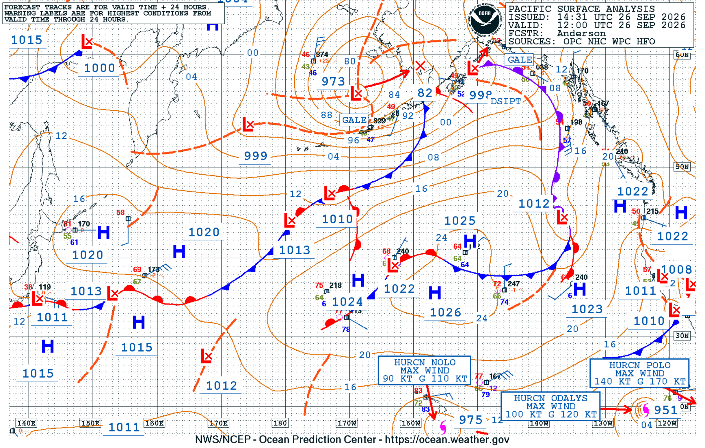 |
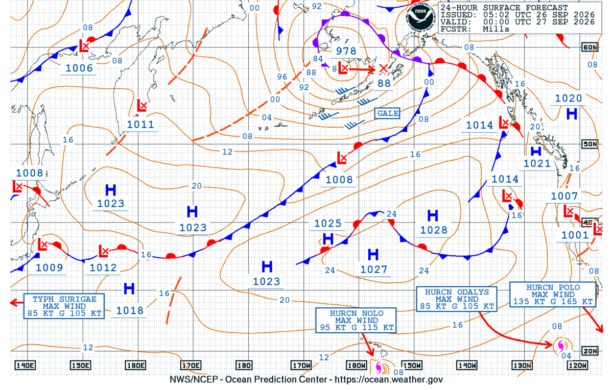 |
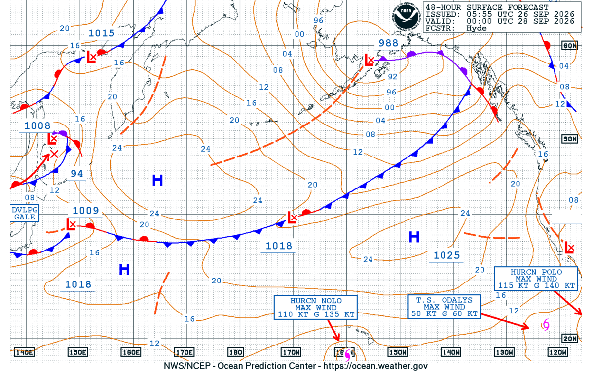 |
Not currently issued by OPC: no Surface Analysis 72 h chart posted in the last 10 days. OPC archive | Not currently issued by OPC: no Surface Analysis 96 h chart posted in the last 10 days. OPC archive |
| 500 mbForecasts from the 00Z Sat 26 Sep run | 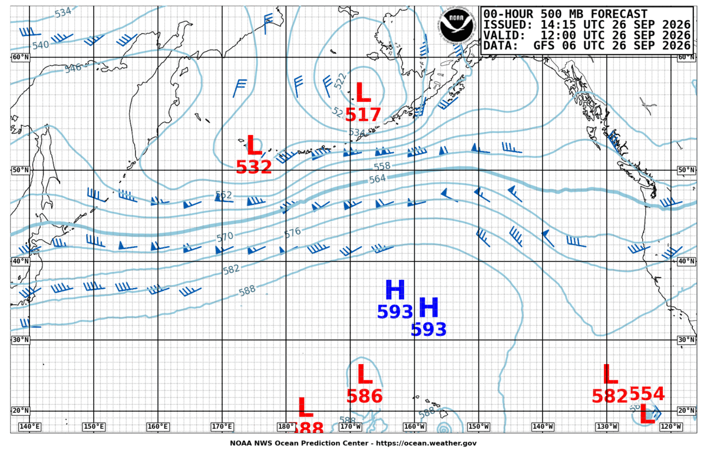 |
 |
 |
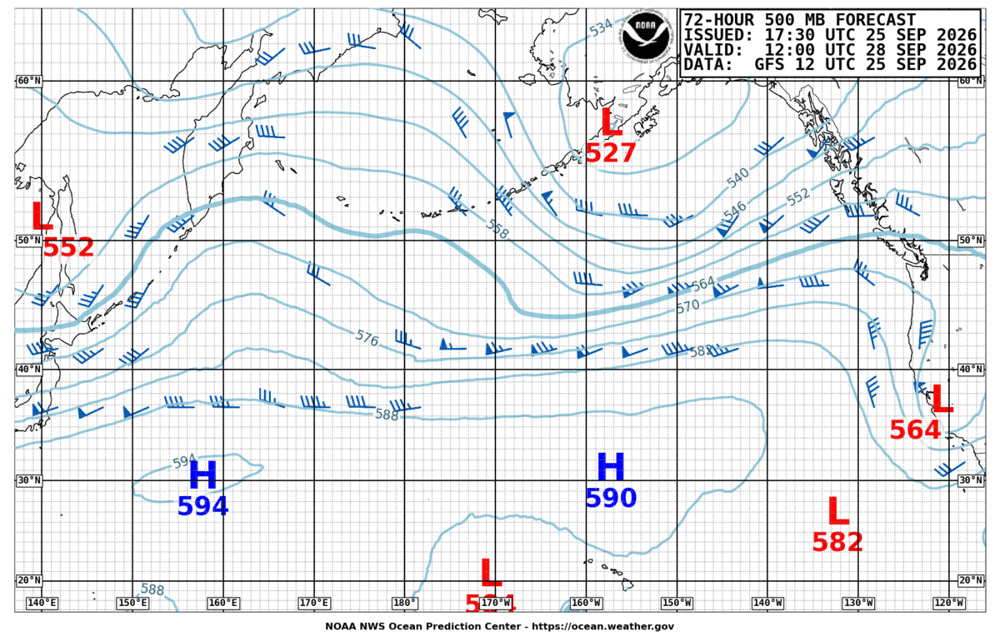 |
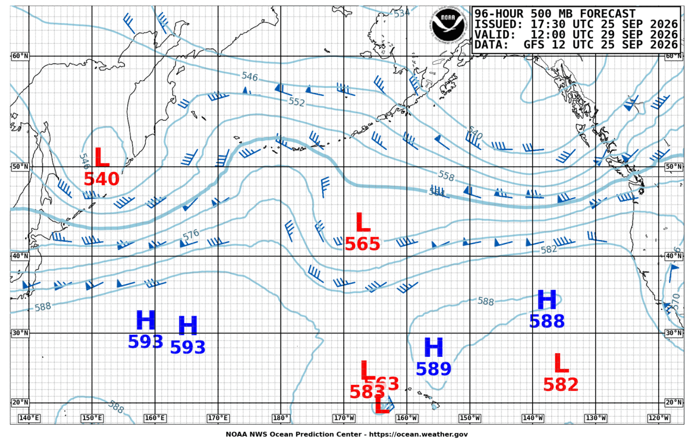 |
| Wind / WaveForecasts from the 00Z Sat 26 Sep run | 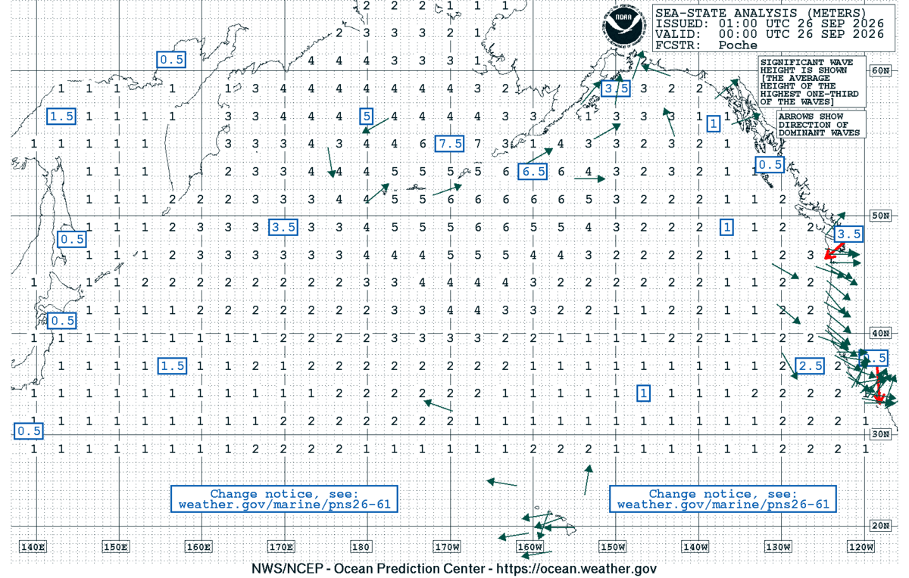 |
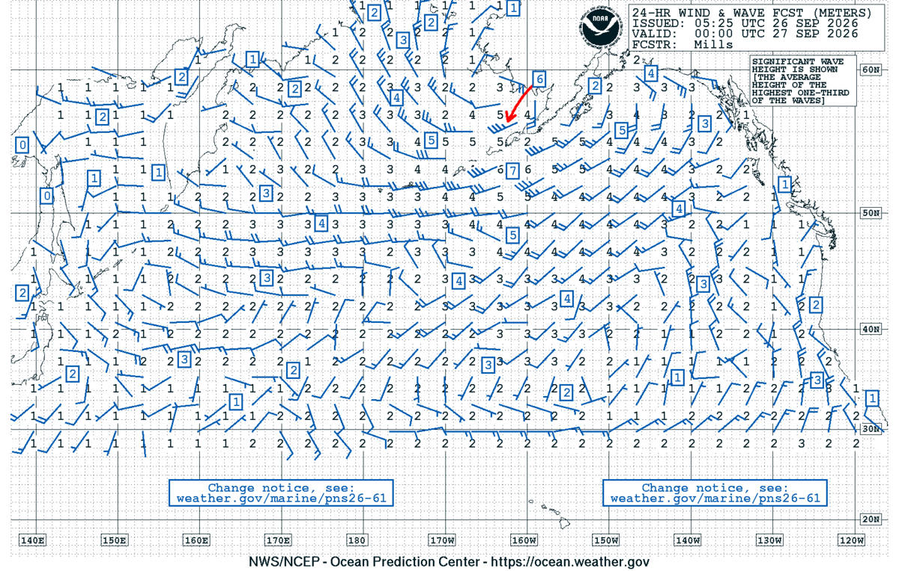 |
 |
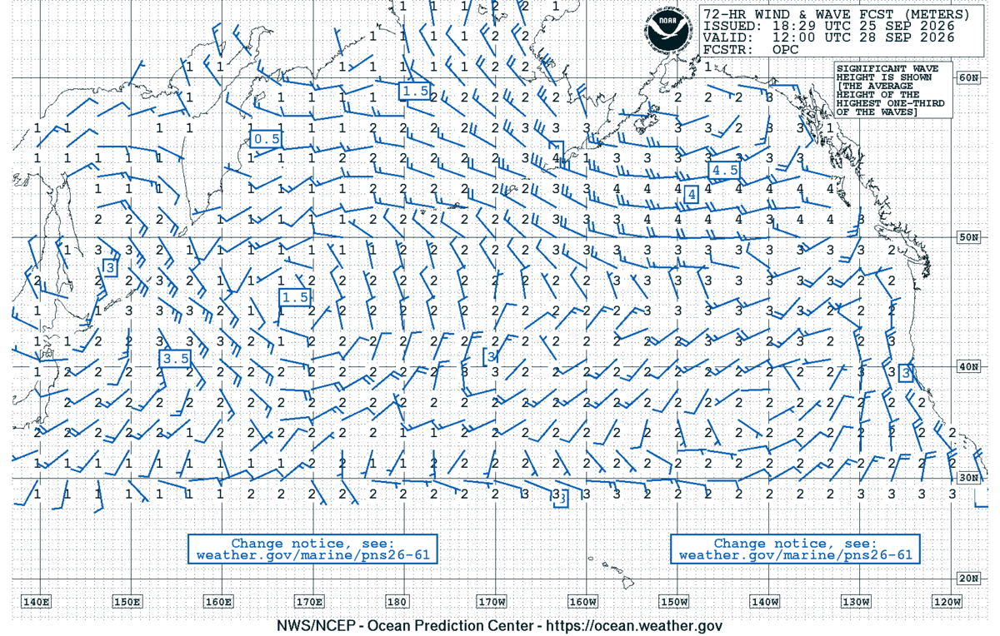 |
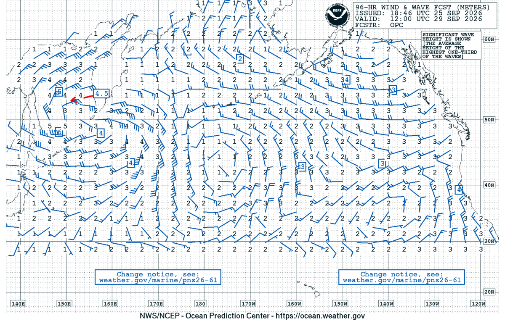 |
NWS Honolulu North Pacific Surface Analysis (Latest)
The Honolulu forecasters' own surface analysis, next to OPC's: it reaches farther into the tropics, covering the ITCZ and the trade-wind belt around Hawaiʻi. Use it for the position and strength of the Pacific High and the fronts, troughs, lows and gales affecting the islands, and to check the automatic Pacific High analysis in the channel analysis section.

High Seas Forecast (Metarea XII)
CCODE/2:31:12:11:00/AOW+POR+AOE/NWS/CCODE SUPERSEDED BY NEXT ISSUANCE IN 6 HOURS SEAS GIVEN AS SIGNIFICANT WAVE HEIGHT...WHICH IS THE AVERAGE HEIGHT OF THE HIGHEST 1/3 OF THE WAVES. INDIVIDUAL WAVES MAY BE MORE THAN TWICE THE SIGNIFICANT WAVE HEIGHT. ONLY YOU KNOW THE WEATHER AT YOUR POSITION. REPORT IT TO THE NATIONAL WEATHER SERVICE. EMAIL US AT VOSOPS@NOAA.GOV(LOWERCASE). FOR ANY TROPICAL CYCLONE INFORMATION BEYOND 48 HOURS REFERENCE THE ASSOCIATED NWS TROPICAL CYCLONE FORECAST/ADVISORY (TCM). SECURITE PACIFIC S OF 67N AND N OF 30N E OF A LINE FROM THE BERING STRAIT TO 53N172E TO 50N180W TO 30N180W ALL FORECASTS VALID OVER ICE FREE FORECAST WATERS SYNOPSIS VALID 0600 UTC SEP 26. 24 HOUR FORECAST VALID 0600 UTC SEP 27. 48 HOUR FORECAST VALID 0600 UTC SEP 28. .WARNINGS. ...GALE WARNING... .LOW 57N176W 969 MB MOVING E 10 KT. WITHIN 360 NM S SEMICIRCLE WINDS 35 TO 45 KT. SEAS 3 TO 6 M. ELSEWHERE WITHIN 420 NM NW...480 NM NE...960 NM SE AND 720 NM SW QUADRANTS WINDS 25 TO 35 KT. SEAS 2.5 TO 5 M. .24 HOUR FORECAST LOW 58N162W 979 MB. WITHIN 480 NM SE...540 NM SW...AND 420 NM NW QUADRANTS WINDS 20 TO 30 KT. SEAS 3 TO 5.5 M. ELSEWHERE WITHIN 780 NM SE...660 NM SW...AND 480 NM NW QUADRANTS WINDS 20 TO 30 KT. SEAS 2.5 TO 5 M...HIGHEST IN SE QUADRANT. ALSO WITHIN 1080 NM SE QUADRANTS WINDS TO 25 KT. SEAS 2.5 TO 4 M. .48 HOUR FORECAST LOW 58N154W 990 MB. WITHIN 1020 NM SE...720 NM SW...AND 480 NM NW QUADRANTS WINDS 20 TO 30 KT. SEAS 2.5 TO 5 M...HIGHEST IN SE QUADRANT. ..GALE WARNING... .LOW 58N149W 996 MB MOVING NE 10 KT. LINE EXTENDS FROM LOW CENTER TO 57N141W TO 53N139W. WITHIN 120 NM NE OF THE LINE WINDS 25 TO 35 KT. SEAS 2.5 TO 4 M. .24 HOUR FORECAST LOW AND CONDITIONS ABSORBED BY LOW 58N162W IN STORM WARNING ABOVE. .SYNOPSIS AND FORECAST. .N OF 45N E OF 126W WINDS LESS THAN 25 KT. SEAS TO 3 M. .24 HOUR FORECAST CONDITIONS DIMINISHED. .LOW 46N139W 1013 MB MOVING SE 20 KT. WITHIN 120 NM W SEMICIRCLE AND WITHIN 120 NM E OF A LINE FROM LOW CENTER TO 42N138W TO 39N139W WINDS 20 TO 30 KT. SEAS TO 2.5 M. .24 HOUR FORECAST LOW 41N133W 1016 MB. FROM 39N TO 45N W OF 174W WINDS TO 25 KT. SEAS TO 3 M. .48 HOUR FORECAST LOW DISSIPATED AND ASSOCIATED CONDITIONS DIMINISHED. .LOW JUST W OF AREA NEAR 42N177E 1010 MB MOVING NE 35 KT. WITHIN 300 NM SE QUADRANT WINDS LESS THAN 25 KT. SEAS TO 2.5 M. .24 HOUR FORECAST LOW 50N155W 1006 MB. WITHIN 180 NM SE OF A LINE FROM LOW CENTER TO 44N167W WINDS 20 TO 30 KT. SEAS 2.5 TO 5 M. .48 HOUR FORECAST CONDITIONS DESCRIBED WITH LOW 58N154W IN STORM WARNING IN WARNINGS SECTION ABOVE. .FROM 33N TO 42N BETWEEN 121W AND 127W WINDS TO 25 KT. SEAS 3 M. .24 HOUR FORECAST FROM 36N TO 44N BETWEEN 120W AND 126W WINDS TO 25 KT. SEAS TO 3 M. .48 HOUR FORECAST FROM 33N TO 43N BETWEEN 119W AND 128W WINDS TO 25 KT. SEAS T0 3 M. .DENSE FOG. VSBY OCCASIONALLY LESS THAN 1 NM FROM 43N TO 46N BETWEEN 174 AND 177W. .24 HOUR FORECAST DENSE FOG WITHIN 90 NM SE OF A LINE FROM 42N171W TO 45N168W TO 47N160W. .48 HOUR FORECAST DENSE FOG WITHIN 60 NM SE OF A LINE FROM 43N157W TO 48N147W. .FORECASTER HYDE. OCEAN PREDICTION CENTER. NATIONAL HURRICANE CENTER MIAMI FL E PACIFIC FROM THE EQUATOR TO 30N E OF 140W AND 03.4S TO THE EQUATOR E OF 120W SYNOPSIS VALID 0600 UTC SAT SEP 26. 24 HOUR FORECAST VALID 0600 UTC SUN SEP 27. 48 HOUR FORECAST VALID 0600 UTC MON SEP 28. .WARNINGS. ...HURRICANE WARNING... .HURRICANE POLO NEAR 17.6N 111.0W 917 MB AT 0900 UTC SEP 26 MOVING WNW OR 290 DEG AT 8 KT. MAXIMUM SUSTAINED WINDS 145 KT GUSTS 175 KT. TROPICAL STORM FORCE WINDS WITHIN 110 NM NE QUADRANT...80 NM SE QUADRANT...90 NM SW QUADRANT...AND 100 NM NW QUADRANT. SEAS 4 M OR GREATER WITHIN 210 NM NE AND SW QUADRANTS...AND 180 NM SE AND NW QUADRANTS WITH SEAS TO 14 M. ELSEWHERE WITHIN 19N105W TO 20N108W TO 19N111W TO 17N113W TO 15N112W TO 14N111W TO 15N109W TO 19N105W...INCLUDING NEAR CABO CORRIENTES...WINDS 20 TO 33 KT. SEAS 3.5 TO 5.5 M. REMAINDER OF AREA WITHIN 17N103W TO 23N109W TO 24N118W TO 12N118W TO 09N109W TO 10N105W TO 17N103W...WITHIN 60 NM OF SHORE...WINDS 20 KT OR LESS. SEAS 3 TO 3.5 M IN MIXED SWELL. .24 HOUR FORECAST HURRICANE POLO NEAR 19.7N 113.3W. MAXIMUM SUSTAINED WINDS 135 KT GUSTS 165 KT. TROPICAL STORM FORCE WINDS WITHIN 90 NM OF CENTER EXCEPT 110 NM NE QUADRANT. SEAS 4 M OR GREATER WITHIN 180 NM N SEMICIRCLE...210 NM SE QUADRANT AND 150 NM W SEMICIRCLE OF CENTER WITH SEAS TO 13.5 M. ELSEWHERE WITHIN 19N110W TO 21N111W TO 21N114W TO 18N116W TO 16N114W TO 16N111W TO 19N110W WINDS 20 TO 33 KT. SEAS 3.5 TO 5.5 M. REMAINDER OF AREA...WITHIN 21N106W TO 27N119W TO 10N119W TO 09N108W TO 11N106W TO 21N106W...INCLUDING NEAR CABO CORRIENTES AND WITHIN 60 NM OF SHORE...WINDS 20 KT OR LESS. SEAS 2.5 TO 3.5 M IN MIXED SWELL. .48 HOUR FORECAST HURRICANE POLO NEAR 23.4N 113.8W. MAXIMUM SUSTAINED WINDS 110 KT GUSTS 135 KT. TROPICAL STORM FORCE WINDS WITHIN 80 NM W SEMICIRCLE...100 NM NE QUADRANT AND 90 NM SE QUADRANT. SEAS 4 M OR GREATER WITHIN 180 NM NE QUADRANT...240 NM SE QUADRANT AND 150 NM W SEMICIRCLE OF CENTER WITH SEAS TO 13 M. ELSEWHERE WITHIN 22N112W TO 24N113W TO 23N116W TO 20N116.5W TO 18N116W TO 17N115W TO 19N113W TO 22N112W WINDS 20 TO 33 KT. SEAS 3 TO 5 M. REMAINDER OF AREA WITHIN 23N109W TO 30N121W TO 15N121W TO 13N118W TO 13N110W TO 23N109W...INCLUDING SEBASTIAN VIZCAINO BAY AND WITHIN 60 NM OF SHORE...WINDS 20 KT OR LESS. SEAS 2.5 TO 3.5 M IN MIXED SWELL. ...HURRICANE WARNING... .HURRICANE ODALYS NEAR 19.1N 123.7W 951 MB AT 0900 UTC SEP 26 MOVING N OR 355 DEG AT 4 KT. MAXIMUM SUSTAINED WINDS 100 KT GUSTS 120 KT. TROPICAL STORM FORCE WINDS WITHIN 120 NM N SEMICIRCLE...90 NM SE QUADRANT AND 100 NM SW QUADRANT. SEAS 4 M OR GREATER WITHIN 180 NM E SEMICIRCLE...210 NM SW QUADRANT AND 150 NM NW QUADRANT WITH SEAS TO 11 M. ELSEWHERE WITHIN 20N121W TO 22N125W TO 20N127.5W TO 17N127W TO 16N125W TO 16N124W TO 17N122W TO 20N121W WINDS 20 TO 33 KT. SEAS 3 TO 5.5 M. REMAINDER OF AREA WITHIN 24N118W TO 25N125W TO 21N131W TO 15N132W TO 10N129W TO 12N117W TO 24N118W WINDS 20 KT OR LESS. SEAS 2.5 TO 3.5 M IN MIXED SWELL. .24 HOUR FORECAST HURRICANE ODALYS NEAR 21.0N 123.5W. MAXIMUM SUSTAINED WINDS 75 KT GUSTS 90 KT. TROPICAL STORM FORCE WINDS WITHIN 80 NM N SEMICIRCLE AND 70 NM S SEMICIRCLE. SEAS 4 M OR GREATER WITHIN 180 NM S SEMICIRCLE AND 150 NM N SEMICIRCLE OF CENTER WITH SEAS TO 9.5 M. ELSEWHERE WITHIN 22N122W TO 23N125W TO 22N127W TO 19N126W TO 18N125W TO 19N122W TO 22N122W WINDS 20 TO 33 KT. SEAS 3 TO 5 M. REMAINDER OF AREA WITHIN 27N119W TO 29N127W TO 26N131W TO 16N132W TO 10N127W TO 10N119W TO 27N119W WINDS 20 KT OR LESS. SEAS 2.5 TO 4.0 M IN MIXED SWELL. .36 HOUR FORECAST TROPICAL STORM ODALYS NEAR 21.8N 123.1W. MAXIMUM SUSTAINED WINDS 60 KT GUSTS 75 KT. .48 HOUR FORECAST TROPICAL STORM ODALYS NEAR 22.1N 122.7W. MAXIMUM SUSTAINED WINDS 45 KT GUSTS 55 KT. TROPICAL STORM FORCE WINDS WITHIN 20 NM NE QUADRANT...10 NM SE QUADRANT...30 NM SW QUADRANT...AND 40 NM NW QUADRANT. SEAS 4 M OR GREATER WITHIN 120 NM OF CENTER WITH SEAS TO 5.5. ELSEWHERE WITHIN 23N122W TO 25N123W TO 26N127W TO 23N127W TO 20N125W TO 21N124W TO 23N122W WINDS 20 TO 33 KT. SEAS 2.5 TO 4 M. REMAINDER OF AREA WITHIN 30N121W TO 30N130W TO 26N140W TO 18N140W TO 16N129W TO 15N121W TO 30N121W WINDS 20 KT OR LESS. SEAS 2.5 TO 3.5 M IN MIXED SWELL. FORECAST WINDS IN AND NEAR ACTIVE TROPICAL CYCLONES SHOULD BE USED WITH CAUTION DUE TO UNCERTAINTY IN FORECAST TRACK...SIZE AND INTENSITY. .SYNOPSIS AND FORECAST. .LOW PRES...INVEST EP90...NEAR 11N98W 1008 MB. WINDS 20 KT OR LESS. SEAS LESS THAN 2.5 M. NUMEROUS SHOWERS AND TSTMS FROM 08N TO 16N BETWEEN 92W AND 100W. .24 HOUR FORECAST LOW PRES...INVEST EP90...POSSIBLE TROPICAL CYCLONE...NEAR 13N99W 1006 MB. WITHIN 10N98W TO 12N100W TO 11N101W TO 10N99W TO 09N98W TO 10N96W WINDS 20 TO 30 KT. SEAS 2.5 M TO 3.5 M. .48 HOUR FORECAST LOW PRES...INVEST EP90...POSSIBLE TROPICAL CYCLONE...NEAR 14N101W 1000 MB. WITHIN 13N99W TO 16N97W TO 15N102W TO 13N102.5W TO 10N102W TO 09N99W TO 10N97W TO 13N99W WINDS 20 TO 30 KT. SEAS 2.5 TO 4 M. .24 HOUR FORECAST NEW LOW PRES 12N141W 1008 MB. WITHIN 10N140W TO 08N140W TO 07N133W TO 08N132W TO 09N135W TO 10N137W TO 10N140W SW TO W WINDS 20 TO 25 KT. SEAS 2.5 TO 3 M. .48 HOUR FORECAST LOW PRES NEAR 13N139W 1006 MB. WITHIN 09N128W TO 09.5N134W TO 11N137W TO 12N139W TO 07N140W TO 08N136W TO 09N131W SW WINDS 20 TO 30 KT. SEAS 2.5 TO 4 M. ELSEWHERE WITHIN 12N121W TO 11.5N131W TO 12N137W TO 13N140W TO 08N140W TO 07N130W TO 12N121W WINDS 20 KT OR LESS. SEAS 2.5 TO 3 M IN MIXED SWELL. .REMAINDER OF AREA WINDS 20 KT OR LESS. SEAS LESS THAN 2.5 M. CONVECTION VALID AT 0915 UTC SAT SEP 26... .HURRICANE POLO...NUMEROUS STRONG WITHIN 90 NM NE QUADRANT... 75 NM SE QUADRANT AND 120 NM W SEMICIRCLE. .HURRICANE ODALYS...NUMEROUS STRONG WITHIN 120 NM NE QUADRANT... 60 NM S SEMICIRCLE AND 90 NM NW QUADRANT. .TROPICAL WAVE FROM 16N97W TO LOW PRES...INVEST EP90...NEAR 11N97W 1008 MB AND TO 10N97W...NUMEROUS MODERATE TO STRONG FROM 08N TO 16N BETWEEN 92W AND 100W. .INTERTROPICAL CONVERGENCE ZONE/MONSOON TROUGH... MONSOON TROUGH AXIS EXTENDS FROM 08N83W TO 09N90W TO INVEST EP90 TO 14N99W. IT RESUMES S OF ODALYS AT 14N122W TO 11N127W TO 10N130W TO 13N140W. SCATTERED MODERATE ISOLATED STRONG FROM 04N TO 08N BETWEEN 84W AND 87W...FROM 05N TO 09N BETWEEN 127W AND 134W AND FROM 01N TO 09N W OF 135W. SCATTERED MODERATE FROM 05N TO 08N BETWEEN 92W AND 96W AND WITHIN 180 NM SE OF THE TROUGH BETWEEN 122W AND 127W. $$ .FORECASTER AGUIRRE. NATIONAL HURRICANE CENTER. NATIONAL WEATHER SERVICE HONOLULU HI NORTH PACIFIC EQUATOR TO 30N BETWEEN 140W AND 180W SYNOPSIS VALID 0600 UTC SEP 26 2026. 24 HOUR FORECAST VALID 0600 UTC SEP 27 2026. 48 HOUR FORECAST VALID 0600 UTC SEP 28 2026. .WARNINGS. ...HURRICANE WARNING... .HURRICANE NOLO NEAR 16.9N 155.3W 975 MB AT 0900 UTC SEP 26 AND QUASI STATIONARY. MAXIMUM SUSTAINED WINDS 90 KT GUSTS 110 KT. TROPICAL STORM FORCE WINDS WITHIN 120 NM N SEMICIRCLE AND 100 NM S SEMICIRCLE. WINDS 20 TO 30 KT ELSEWHERE FROM 14N TO 27N BETWEEN 150W AND 160W. SEAS 4 M OR GREATER WITHIN 180 NM S SEMICIRCLE... 210 NM NE QUADRANT AND 150 NM NW QUADRANT WITH SEAS TO 8.5 M. SEAS 2.5 TO 3.5 M ELSEWHERE FROM 11N TO 26N BETWEEN 150W AND 160W. SCATTERED TO NUMEROUS MODERATE TSTMS WITHIN 100 NM SW SEMICIRCLE AND 60 NM NE SEMICIRCLE FROM CENTER. .24 HOUR FORECAST HURRICANE NOLO NEAR 16.8N 156.9W. MAXIMUM SUSTAINED WINDS 105 KT GUSTS 130 KT. TROPICAL STORM FORCE WINDS WITHIN 80 NM S SEMICIRCLE...140 NM NE QUADRANT AND 110 NM NW QUADRANT. WINDS 20 TO 30 KT ELSEWHERE FROM 14N TO 27N BETWEEN 150W AND 161W. SEAS 4 M OR GREATER FROM 15N TO 20N BETWEEN 154W AND 159W WITH SEAS TO 9.5 M. SEAS 2.5 TO 3.5 M ELSEWHERE FROM 12N TO 29N BETWEEN 150W AND 163W. .48 HOUR FORECAST HURRICANE NOLO NEAR 17.2N 160.6W. MAXIMUM SUSTAINED WINDS 120 KT GUSTS 145 KT. TROPICAL STORM FORCE WINDS WITHIN 150 NM NE QUADRANT...90 NM SE QUADRANT...70 NM SW QUADRANT AND 100 NM NW QUADRANT. WINDS 20 TO 30 KT ELSEWHERE FROM 15N TO 26N BETWEEN 154W AND 163W. SEAS 4 M OR GREATER FROM 14N TO 19N BETWEEN 157W AND 164W WITH SEAS TO 10.5 M. SEAS 2.5 TO 3.5 M ELSEWHERE FROM 10N TO 30N BETWEEN 155W AND 170W. FORECAST WINDS IN AND NEAR ACTIVE TROPICAL CYCLONES SHOULD BE USED WITH CAUTION DUE TO UNCERTAINTY IN FORECAST TRACK...SIZE AND INTENSITY. .SYNOPSIS AND FORECAST. .LOW 1011 MB 09N177W NEARLY STATIONARY. ISOLATED MODERATE TSTMS N OF LOW WITHIN 50 NM OF 12N177W. .24 HOUR FORECAST LOW ABSORBED BY MONSOON TROUGH. .TROUGH 18N175W TO 22N174W TO 27N171W MOVING W 10 KT. .24 HOUR FORECAST TROUGH 19N179W TO 23N179W TO 27N178W. .48 HOUR FORECAST TROUGH MOVED W OF AREA. .WINDS 20 TO 25 KT FROM 19N TO 26N BETWEEN 140W AND 150W...AND FROM 21N TO 26N BETWEEN 160W AND 166W. SEAS 2.5 TO 3 M FROM 15N TO 25N BETWEEN 140W AND 150W...AND FROM 14N TO 26N BETWEEN 160W AND 165W. .24 HOUR FORECAST WINDS 20 TO 25 KT FROM 15N TO 27N BETWEEN 140W AND 150W...AND 20 TO 30 KT FROM 18N TO 27N BETWEEN 161W AND 167W. SEAS 2.5 TO 3 M FROM 13N TO 26N BETWEEN 140W AND 150W...AND FROM 16N TO 30N BETWEEN 163W AND 170W. .48 HOUR FORECAST WINDS 20 TO 25 KT FROM 15N TO 26N BETWEEN 140W AND 154W...AND FROM 18N TO 26N BETWEEN 163W AND 171W. SEAS 2.5 TO 3 M FROM 13N TO 28N BETWEEN 140W AND 155W...AND FROM 18N TO 29N BETWEEN 170W AND 174W. .24 HOUR FORECAST NEW LOW 1008 MB NEAR 12N140W. WINDS 20 TO 25 KT FROM 08N TO 13N E OF 142W. SEAS 2.5 TO 3 M FROM 09N TO 12N E OF 144W. .48 HOUR FORECAST LOW 1007 MB NEAR 13N142W. WINDS 20 TO 25 KT FROM 07N TO 09N E OF 144W. SEAS 2.5 TO 3 M FROM 07N TO 12N E OF 145W. .WINDS 20 KT OR LESS AND SEAS BELOW 2.5 M OVER REMAINDER OF FORECAST AREA. .MONSOON TROUGH 14N140W TO 16N150W...AND 14N166W TO LOW MENTIONED ABOVE TO 10N180W. SCATTERED MODERATE TSTMS WITHIN 50 NM OF TROUGH BETWEEN 140W AND 144W...AND S OF TROUGH FROM 00N TO 09N BETWEEN 160W AND 176W. SCATTERED MODERATE TO STRONG TSTMS S OF TROUGH FROM 02N TO 11N E OF 145W. $$ .FORECASTER CHAN. HONOLULU HI.
Synoptic to Regional Level
Latest Satellite Imagery
These load live from NOAA each time the page opens.
GOES-West - Tropical West GeoColor (day true color, night multispectral IR)

GOES-West - Hawaiʻi Sector GeoColor (day true color, night multispectral IR)

Honolulu Area Forecast Discussion
Hurricane Nolo remains nearly stationary south of the Big Island, but is expected to make a turn to the west this morning. The remains a chance for flooding over portions of the Big Island and Maui today. Localized strong and gusty winds are possible across all islands, with the highest winds expected on the Big Island and along the ridges on Maui.
Hurricane Nolo remains about 145 miles south of the Big Island as it remained nearly stationary throughout the night. The mid level trough remained firmly in place preventing Nolo from beginning its westward track. As a mid-level ridge north of the islands pushes southward, it will help Nolo to begin its westward track. With Nolo remaining nearly stationary, tropical headlines remain unchanged, as does the Flood Watch for Maui County and the Big Island.
Despite the headlines remaining the same, the forecast has been updated to reflect the latest track of Nolo, but with no discerniblechanges to the winds for today. Most of the changes relate to the QPF for today and tonight, with a downward trend reflecting in the forecast. The Wind Advisory for Kauai and Oahu is in effect through tomorrow afternoon.
Upper level clouds continue to stream over the Big Island and are at times passing over Maui County from Nolo. Lower clouds remain over the southeast and east sides of the Big Island, with showers embedded within. The highest gages reported 4 inches overnight on the Big Island, and about 1 inch on Maui. Winds have been strongest over the Kohala ridgeline on the Big Island, and over the West Maui Mountains on Maui, with gusts over 60 mph.
The forecast was nudged to the NBM starting Monday onwards. The mid level trough mentioned above will help to draw Nolo north and then northwestward early next week. At this time the forecast keeps Nolo west of Kauai. Toward the end of next week, light south- to- southeast wind flow is expected to prevail as the pressure gradient over the state weakens substantially.
Gusty trade winds peaking between 25 to 35 knots continue across the islands. Winds are expected to increase during the day with the potential for gusts as high as 45 knots this afternoon/evening. Locally stronger winds are possible from Molokai to the Big Island due to Hurricane Nolo. North of Molokai, occasional trade showers and temporary reductions in visibility/ceilings continue across windward and mauka areas. Showers from Hurricane Nolo continued across the Big Island overnight bringing temporary periods of MVFR-IFR conditions. Additional rounds of showers are forecast today, so expect temporary reductions in visibility and ceiling heights (MVFR-IFR conditions) as stronger showers move over the island. Scattered showers will extend northwards from the Big Island to Molokai with temporary MVFR-IFR conditions possible if a stronger shower is able to develop.
AIRMET Sierra has been issued for IFR conditions across the eastern Big Island. Additionally, AIRMET Sierra remains in effect for tempo mountain obscuration for eastern Kauai, Oahu, Molokai, Lanai, and Maui tonight.
AIRMET Tango remains in effect for moderate turbulence downwind of island terrain due to breezy trade winds. Expect this to continue through the forecast period. An AIRMET has been issued for surface winds greater than 30 knots due to Hurricane Nolo for the Big Island, Maui, Lanai, and Molokai. This will remain in effect through at least this evening amd may need to be extended to include the rest of the state.
TC SIGMET Oscar series covers Hurricane Nolo, and interests should continue to monitor for updates to this SIGMET.
Hurricane Warnings around the Big Island and Tropical Storm Warnings around Maui County remain in effect as Hurricane Nolo begins to accelerate slowly westward today. A Small Craft Advisory remains in effect for the remaining waters today. The Gale Watch for waters around Oahu and Kauai has been trimmed back to tonight and Sunday as confidence has decreased somewhat in widespread gale force winds developing across the coastal waters. Nolo is expected to remain south of the Hawaiian Islands, centered well outside of the coastal waters this weekend, but strong winds and high seas can nonetheless be expected well away from the storm itself. The hurricane will gain distance from the islands as it begins to turn northwest by early next week, leading to more limited impacts by Monday.
A combination of southeast swell originating from Hurricane Nolo and strengthening easterly trade winds is producing advisory level surf for east facing shores of Kauai and Oahu, and east and southeast facing shores of Maui, Molokai, and the Big Island today. Advisory level surf is expected to continue through Sunday, for which the High Surf Advisory remains in effect. By that point, Nolo will gain some distance from the islands to the southwest, leading to less direct swell impacts and weakening trade winds, which will decrease east and southeast shore surf below advisory criteria. A series of small, medium-period east swells are expected from Hurricanes Odalys and Polo in the East Pacific next week.
South facing shores can expect a moderate bump to surf as Hurricane Nolo tracks south of the islands through at least the weekend. A small, long period northwest swell also fills in this weekend and brings a small bump to north facing shores into early next week.
Winds will remain strong and gusty over the highest terrain of the Big Island and Maui, and gusty trades over Oahu and Kauai. The rainfall on the Big Island will likely mitigate fire danger over most areas. From Kauai to Maui County, rainfall over the last month has led to some improvement in fuels, but the gusty trade winds will produce moderate fire weather conditions over drier leeward areas through the weekend. Drier conditions are expected early next week, although winds will diminish substantially as pressure gradient weakens.
Wind Advisory until 6 PM HST Sunday for Central Oahu-East Honolulu-Ewa Plain-Honolulu Metro-Kauai East-Kauai Mountains- Kauai North-Kauai South-Kauai Southwest-Koolau Leeward-Koolau Windward-Niihau-Oahu North Shore-Olomana-Waianae Coast-Waianae Mountains.
High Surf Advisory until 6 PM HST Sunday for Big Island East-Big Island North-Big Island Southeast-Kauai East-Kauai South- Kipahulu-Koolau Windward-Maui Windward West-Molokai Southeast- Molokai Windward-Olomana-South Haleakala-Windward Haleakala.
Flood Watch through this afternoon for Big Island East-Big Island Interior-Big Island North-Big Island South-Big Island Southeast-Big Island Summits-Haleakala Summit-Kahoolawe-Kipahulu- Kohala-Kona-Lanai Leeward-Lanai Mauka-Lanai South-Lanai Windward- Maui Central Valley North-Maui Central Valley South-Maui Leeward West-Maui Windward West-Molokai Leeward South-Molokai North- Molokai Southeast-Molokai West-Molokai Windward-South Haleakala- South Maui/Upcountry-Windward Haleakala.
Tropical Storm Watch for Haleakala Summit-Kahoolawe-Kipahulu- Lanai Leeward-Lanai Mauka-Lanai South-Lanai Windward-Maui Central Valley North-Maui Central Valley South-Maui Leeward West- Maui Windward West-Molokai Leeward South-Molokai North-Molokai Southeast-Molokai West-Molokai Windward-South Haleakala-South Maui/Upcountry-Windward Haleakala.
Hurricane Watch for Big Island East-Big Island Interior-Big Island North-Big Island South-Big Island Southeast-Big Island Summits-Kohala-Kona.
Tropical Storm Warning for Big Island East-Big Island Interior- Big Island North-Big Island South-Big Island Southeast-Big Island Summits-Kohala-Kona.
Tropical Storm Watch for Kaiwi Channel-Maalaea Bay-Maui County Leeward Waters-Maui County Windward Waters-Pailolo Channel.
Hurricane Watch for Alenuihaha Channel-Big Island Leeward Waters- Big Island Southeast Waters-Big Island Windward Waters.
Tropical Storm Warning for Alenuihaha Channel-Big Island Leeward Waters-Big Island Southeast Waters-Big Island Windward Waters.
Small Craft Advisory until 6 PM HST this evening for Kauai Channel-Kauai Leeward Waters-Kauai Northwest Waters-Kauai Windward Waters-Oahu Leeward Waters-Oahu Windward Waters.
Gale Watch from this evening through Sunday afternoon for Kauai Channel-Kauai Leeward Waters-Kauai Northwest Waters-Kauai Windward Waters-Oahu Leeward Waters-Oahu Windward Waters.
DISCUSSION...M Ballard AVIATION...Kennedy MARINE...Quesada FIRE WEATHER...M Ballard
Original text
FXHW60 PHFO 261507 AFDHFO Area Forecast Discussion National Weather Service Honolulu HI 507 AM HST Sat Sep 26 2026 .SYNOPSIS... Hurricane Nolo remains nearly stationary south of the Big Island, but is expected to make a turn to the west this morning. The remains a chance for flooding over portions of the Big Island and Maui today. Localized strong and gusty winds are possible across all islands, with the highest winds expected on the Big Island and along the ridges on Maui. && .DISCUSSION... Hurricane Nolo remains about 145 miles south of the Big Island as it remained nearly stationary throughout the night. The mid level trough remained firmly in place preventing Nolo from beginning its westward track. As a mid-level ridge north of the islands pushes southward, it will help Nolo to begin its westward track. With Nolo remaining nearly stationary, tropical headlines remain unchanged, as does the Flood Watch for Maui County and the Big Island. Despite the headlines remaining the same, the forecast has been updated to reflect the latest track of Nolo, but with no discerniblechanges to the winds for today. Most of the changes relate to the QPF for today and tonight, with a downward trend reflecting in the forecast. The Wind Advisory for Kauai and Oahu is in effect through tomorrow afternoon. Upper level clouds continue to stream over the Big Island and are at times passing over Maui County from Nolo. Lower clouds remain over the southeast and east sides of the Big Island, with showers embedded within. The highest gages reported 4 inches overnight on the Big Island, and about 1 inch on Maui. Winds have been strongest over the Kohala ridgeline on the Big Island, and over the West Maui Mountains on Maui, with gusts over 60 mph. The forecast was nudged to the NBM starting Monday onwards. The mid level trough mentioned above will help to draw Nolo north and then northwestward early next week. At this time the forecast keeps Nolo west of Kauai. Toward the end of next week, light south- to- southeast wind flow is expected to prevail as the pressure gradient over the state weakens substantially. && .AVIATION... Gusty trade winds peaking between 25 to 35 knots continue across the islands. Winds are expected to increase during the day with the potential for gusts as high as 45 knots this afternoon/evening. Locally stronger winds are possible from Molokai to the Big Island due to Hurricane Nolo. North of Molokai, occasional trade showers and temporary reductions in visibility/ceilings continue across windward and mauka areas. Showers from Hurricane Nolo continued across the Big Island overnight bringing temporary periods of MVFR-IFR conditions. Additional rounds of showers are forecast today, so expect temporary reductions in visibility and ceiling heights (MVFR-IFR conditions) as stronger showers move over the island. Scattered showers will extend northwards from the Big Island to Molokai with temporary MVFR-IFR conditions possible if a stronger shower is able to develop. AIRMET Sierra has been issued for IFR conditions across the eastern Big Island. Additionally, AIRMET Sierra remains in effect for tempo mountain obscuration for eastern Kauai, Oahu, Molokai, Lanai, and Maui tonight. AIRMET Tango remains in effect for moderate turbulence downwind of island terrain due to breezy trade winds. Expect this to continue through the forecast period. An AIRMET has been issued for surface winds greater than 30 knots due to Hurricane Nolo for the Big Island, Maui, Lanai, and Molokai. This will remain in effect through at least this evening amd may need to be extended to include the rest of the state. TC SIGMET Oscar series covers Hurricane Nolo, and interests should continue to monitor for updates to this SIGMET. && .MARINE... Hurricane Warnings around the Big Island and Tropical Storm Warnings around Maui County remain in effect as Hurricane Nolo begins to accelerate slowly westward today. A Small Craft Advisory remains in effect for the remaining waters today. The Gale Watch for waters around Oahu and Kauai has been trimmed back to tonight and Sunday as confidence has decreased somewhat in widespread gale force winds developing across the coastal waters. Nolo is expected to remain south of the Hawaiian Islands, centered well outside of the coastal waters this weekend, but strong winds and high seas can nonetheless be expected well away from the storm itself. The hurricane will gain distance from the islands as it begins to turn northwest by early next week, leading to more limited impacts by Monday. A combination of southeast swell originating from Hurricane Nolo and strengthening easterly trade winds is producing advisory level surf for east facing shores of Kauai and Oahu, and east and southeast facing shores of Maui, Molokai, and the Big Island today. Advisory level surf is expected to continue through Sunday, for which the High Surf Advisory remains in effect. By that point, Nolo will gain some distance from the islands to the southwest, leading to less direct swell impacts and weakening trade winds, which will decrease east and southeast shore surf below advisory criteria. A series of small, medium-period east swells are expected from Hurricanes Odalys and Polo in the East Pacific next week. South facing shores can expect a moderate bump to surf as Hurricane Nolo tracks south of the islands through at least the weekend. A small, long period northwest swell also fills in this weekend and brings a small bump to north facing shores into early next week. && .FIRE WEATHER... Winds will remain strong and gusty over the highest terrain of the Big Island and Maui, and gusty trades over Oahu and Kauai. The rainfall on the Big Island will likely mitigate fire danger over most areas. From Kauai to Maui County, rainfall over the last month has led to some improvement in fuels, but the gusty trade winds will produce moderate fire weather conditions over drier leeward areas through the weekend. Drier conditions are expected early next week, although winds will diminish substantially as pressure gradient weakens. && .HFO WATCHES/WARNINGS/ADVISORIES... Wind Advisory until 6 PM HST Sunday for Central Oahu-East Honolulu-Ewa Plain-Honolulu Metro-Kauai East-Kauai Mountains- Kauai North-Kauai South-Kauai Southwest-Koolau Leeward-Koolau Windward-Niihau-Oahu North Shore-Olomana-Waianae Coast-Waianae Mountains. High Surf Advisory until 6 PM HST Sunday for Big Island East-Big Island North-Big Island Southeast-Kauai East-Kauai South- Kipahulu-Koolau Windward-Maui Windward West-Molokai Southeast- Molokai Windward-Olomana-South Haleakala-Windward Haleakala. Flood Watch through this afternoon for Big Island East-Big Island Interior-Big Island North-Big Island South-Big Island Southeast-Big Island Summits-Haleakala Summit-Kahoolawe-Kipahulu- Kohala-Kona-Lanai Leeward-Lanai Mauka-Lanai South-Lanai Windward- Maui Central Valley North-Maui Central Valley South-Maui Leeward West-Maui Windward West-Molokai Leeward South-Molokai North- Molokai Southeast-Molokai West-Molokai Windward-South Haleakala- South Maui/Upcountry-Windward Haleakala. Tropical Storm Watch for Haleakala Summit-Kahoolawe-Kipahulu- Lanai Leeward-Lanai Mauka-Lanai South-Lanai Windward-Maui Central Valley North-Maui Central Valley South-Maui Leeward West- Maui Windward West-Molokai Leeward South-Molokai North-Molokai Southeast-Molokai West-Molokai Windward-South Haleakala-South Maui/Upcountry-Windward Haleakala. Hurricane Watch for Big Island East-Big Island Interior-Big Island North-Big Island South-Big Island Southeast-Big Island Summits-Kohala-Kona. Tropical Storm Warning for Big Island East-Big Island Interior- Big Island North-Big Island South-Big Island Southeast-Big Island Summits-Kohala-Kona. Tropical Storm Watch for Kaiwi Channel-Maalaea Bay-Maui County Leeward Waters-Maui County Windward Waters-Pailolo Channel. Hurricane Watch for Alenuihaha Channel-Big Island Leeward Waters- Big Island Southeast Waters-Big Island Windward Waters. Tropical Storm Warning for Alenuihaha Channel-Big Island Leeward Waters-Big Island Southeast Waters-Big Island Windward Waters. Small Craft Advisory until 6 PM HST this evening for Kauai Channel-Kauai Leeward Waters-Kauai Northwest Waters-Kauai Windward Waters-Oahu Leeward Waters-Oahu Windward Waters. Gale Watch from this evening through Sunday afternoon for Kauai Channel-Kauai Leeward Waters-Kauai Northwest Waters-Kauai Windward Waters-Oahu Leeward Waters-Oahu Windward Waters. && $$ DISCUSSION...M Ballard AVIATION...Kennedy MARINE...Quesada FIRE WEATHER...M Ballard
Hawaiʻi Offshore Waters Forecast (40–240 nm)
Hawaiian offshore waters beyond 40 nautical miles out to 240 nautical miles including the portion of the Papahanaumokuakea Marine National Monument east of French Frigate Shoals
Seas given as significant wave height, which is the average height of the highest 1/3 of the waves. Individual waves may be more than twice the significant wave height.
Strong winds and hazardous seas will accompany Hurricane Nolo as it advances west across area waters through this weekend, then turns northwest early next week and weakens to a tropical storm by Wednesday.
AT 500 AM HST HURRICANE NOLO WAS CENTERED AT 16.9N 155.5W...NEARLY STATIONARY
NOLO FORECAST POSITIONS 200 PM HST SATURDAY 16.9N 156.2W 200 AM HST SUNDAY 16.8N 157.8W 200 PM HST SUNDAY 16.8N 159.7W 200 AM HST MONDAY 17.7N 161.5W 200 PM HST MONDAY 19.3N 163.0W 200 AM HST TUESDAY 21.0N 163.9W 200 AM HST WEDNESDAY 23.3N 165.3W 200 AM HST TUESDAY 23.5N 168.0W 200 AM HST WEDNESDAY 23.0N 170.5W 200 AM HST THURSDAY 22.5N 173.0W
Hurricane conditions expected S of 19N. Elsewhere, NE to E winds 20 to 30 kt. Seas 9 to 15 ft. Isolated thunderstorms S of 19N.
Hurricane conditions expected S of 19N. Elsewhere, NE to E winds 20 to 30 kt. Seas 11 to 15 ft. Isolated thunderstorms S of 19N.
Hurricane conditions expected S of 20N. Elsewhere, E winds 20 to 30 kt. Seas 10 to 14 ft. Isolated thunderstorms S of 20N.
Hurricane conditions expected SW waters. Elsewhere, E winds 15 to 25 kt. Seas 9 to 14 ft. Isolated thunderstorms SW waters.
Hurricane conditions possible W of 160W. Elsewhere, E to SE winds 15 to 25 kt. Seas 8 to 14 ft. Isolated thunderstorms W of 160W.
Hurricane conditions possible W of 161W. Elsewhere, E to SE winds 10 to 20 kt. Seas 6 to 13 ft. Isolated thunderstorms W of 161W.
Tropical storm conditions possible W of 162W. Elsewhere, E to SE winds 10 to 20 kt. Seas 6 to 10 ft. Isolated thunderstorms W of 162W.
Original text
FZHW60 PHFO 261518 OFFHFO Offshore Waters Forecast for Hawaii National Weather Service Honolulu HI 518 AM HST Sat Sep 26 2026 Hawaiian offshore waters beyond 40 nautical miles out to 240 nautical miles including the portion of the Papahanaumokuakea Marine National Monument east of French Frigate Shoals Seas given as significant wave height, which is the average height of the highest 1/3 of the waves. Individual waves may be more than twice the significant wave height. PHZ105-262230- 518 AM HST Sat Sep 26 2026 .Synopsis for the Hawaiian offshore waters... Strong winds and hazardous seas will accompany Hurricane Nolo as it advances west across area waters through this weekend, then turns northwest early next week and weakens to a tropical storm by Wednesday. AT 500 AM HST HURRICANE NOLO WAS CENTERED AT 16.9N 155.5W...NEARLY STATIONARY NOLO FORECAST POSITIONS 200 PM HST SATURDAY 16.9N 156.2W 200 AM HST SUNDAY 16.8N 157.8W 200 PM HST SUNDAY 16.8N 159.7W 200 AM HST MONDAY 17.7N 161.5W 200 PM HST MONDAY 19.3N 163.0W 200 AM HST TUESDAY 21.0N 163.9W 200 AM HST WEDNESDAY 23.3N 165.3W 200 AM HST TUESDAY 23.5N 168.0W 200 AM HST WEDNESDAY 23.0N 170.5W 200 AM HST THURSDAY 22.5N 173.0W $$ PHZ180-262230- Hawaiian Offshore Waters- 518 AM HST Sat Sep 26 2026 ...HURRICANE WARNING IN EFFECT... .TODAY...Hurricane conditions expected S of 19N. Elsewhere, NE to E winds 20 to 30 kt. Seas 9 to 15 ft. Isolated thunderstorms S of 19N. .TONIGHT...Hurricane conditions expected S of 19N. Elsewhere, NE to E winds 20 to 30 kt. Seas 11 to 15 ft. Isolated thunderstorms S of 19N. .SUNDAY...Hurricane conditions expected S of 20N. Elsewhere, E winds 20 to 30 kt. Seas 10 to 14 ft. Isolated thunderstorms S of 20N. .SUNDAY NIGHT...Hurricane conditions expected SW waters. Elsewhere, E winds 15 to 25 kt. Seas 9 to 14 ft. Isolated thunderstorms SW waters. .MONDAY...Hurricane conditions possible W of 160W. Elsewhere, E to SE winds 15 to 25 kt. Seas 8 to 14 ft. Isolated thunderstorms W of 160W. .TUESDAY...Hurricane conditions possible W of 161W. Elsewhere, E to SE winds 10 to 20 kt. Seas 6 to 13 ft. Isolated thunderstorms W of 161W. .WEDNESDAY...Tropical storm conditions possible W of 162W. Elsewhere, E to SE winds 10 to 20 kt. Seas 6 to 10 ft. Isolated thunderstorms W of 162W. $$
Hawaiʻi Statewide Coastal Waters Forecast (to 40 nm)
Strong winds and hazardous seas will accompany Hurricane Nolo as it advances westward across area waters through the weekend, then turns northwest early next week.
Tropical storm conditions expected with hurricane conditions possible. East northeast winds 20 to 25 knots to Kauai...east northeast 30 to 40 knots elsewhere. Seas 13 to 18 feet. Wave Detail: East 11 feet at 8 seconds. Scattered heavy showers with isolated thunderstorms.
Tropical storm conditions expected with hurricane conditions possible. East northeast winds 25 to 30 knots near Kauai and Oahu...east northeast 30 to 40 knots elsewhere. Seas 14 to 19 feet. Wave Detail: East northeast 13 feet at 9 seconds and south southwest 3 feet at 15 seconds. Scattered showers.
Tropical storm conditions expected with hurricane conditions possible. East northeast winds 40 to 50 knots Alenuihaha Channel...east northeast 25 to 35 knots elsewhere. Seas 15 to 20 feet. Wave Detail: East 13 feet at 9 seconds and south southwest 5 feet at 11 seconds. Scattered showers.
East winds 40 to 50 knots Alenuihaha Channel... east 25 to 30 knots elsewhere. Seas 15 to 20 feet. Wave Detail: East 12 feet at 8 seconds and south southwest 5 feet at 10 seconds. Scattered showers.
East winds 35 to 45 knots Alenuihaha Channel...east 25 to 30 knots elsewhere. Seas 12 to 16 feet. Isolated showers.
East winds 30 to 35 knots Alenuihaha Channel... east 20 to 25 knots elsewhere. Seas 10 to 14 feet. Scattered showers.
to Kauai, east winds 20 to 25 knots, becoming east southeast 25 to 30 knots. Elsewhere, east southeast winds 20 to 25 knots, easing to 15 to 20 knots. Seas 8 to 11 feet. Scattered showers.
East southeast winds 25 to 30 knots. Seas 8 to 11 feet, subsiding to 6 to 7 feet. Scattered showers.
Winds and seas higher in and near tstms.
Original text
Expires:No;;089747 FZHW51 PHFO 261503 CWFHI1 Generalized Statewide Coastal Waters Forecast for Hawaii National Weather Service Honolulu HI 503 AM HST Sat Sep 26 2026 .Synopsis for Hawaiian coastal waters... Strong winds and hazardous seas will accompany Hurricane Nolo as it advances westward across area waters through the weekend, then turns northwest early next week. $$ Hawaiian waters within 40 nautical miles including the channels- ...TROPICAL STORM WARNING... ...SMALL CRAFT ADVISORY... ...HURRICANE WATCH... ...TROPICAL STORM WATCH... ...GALE WATCH... .TODAY...Tropical storm conditions expected with hurricane conditions possible. East northeast winds 20 to 25 knots to Kauai...east northeast 30 to 40 knots elsewhere. Seas 13 to 18 feet. Wave Detail: East 11 feet at 8 seconds. Scattered heavy showers with isolated thunderstorms. .TONIGHT...Tropical storm conditions expected with hurricane conditions possible. East northeast winds 25 to 30 knots near Kauai and Oahu...east northeast 30 to 40 knots elsewhere. Seas 14 to 19 feet. Wave Detail: East northeast 13 feet at 9 seconds and south southwest 3 feet at 15 seconds. Scattered showers. .SUNDAY...Tropical storm conditions expected with hurricane conditions possible. East northeast winds 40 to 50 knots Alenuihaha Channel...east northeast 25 to 35 knots elsewhere. Seas 15 to 20 feet. Wave Detail: East 13 feet at 9 seconds and south southwest 5 feet at 11 seconds. Scattered showers. .SUNDAY NIGHT...East winds 40 to 50 knots Alenuihaha Channel... east 25 to 30 knots elsewhere. Seas 15 to 20 feet. Wave Detail: East 12 feet at 8 seconds and south southwest 5 feet at 10 seconds. Scattered showers. .MONDAY...East winds 35 to 45 knots Alenuihaha Channel...east 25 to 30 knots elsewhere. Seas 12 to 16 feet. Isolated showers. .MONDAY NIGHT...East winds 30 to 35 knots Alenuihaha Channel... east 20 to 25 knots elsewhere. Seas 10 to 14 feet. Scattered showers. .TUESDAY...to Kauai, east winds 20 to 25 knots, becoming east southeast 25 to 30 knots. Elsewhere, east southeast winds 20 to 25 knots, easing to 15 to 20 knots. Seas 8 to 11 feet. Scattered showers. .WEDNESDAY...East southeast winds 25 to 30 knots. Seas 8 to 11 feet, subsiding to 6 to 7 feet. Scattered showers. Winds and seas higher in and near tstms. $$
Maunakea Observatories Forecast Discussion
5 PM HST Friday 25 September (0300 UTC Saturday 26 September) 2026
The atmosphere near the Big Island will remain saturated and unstable, allowing extensive fog, high humidity and/or rain to plague the summit probably through most of Saturday night. There is also a possibility for convection developing in the area and periods of heavy rain at the summit mainly through sunrise tomorrow. There is a reasonably good chance that the moisture and instability will begin to slide out of the area, allowing the inversion to rebuild near 7-8 thousand feet by Sunday afternoon, significantly decreasing the risk for fog/rain at the summit for the following 2 nights. However, there is a chance that moisture could return to the summit and breakdown the inversion again through Tuesday night. Extensive daytime clouds are expected for tomorrow then should taper for Sunday and especially Monday, only to pick up again on Tuesday and Wednesday. Thick widespread clouds will continue to build in from the south, contributing to overcast skies probably into early Saturday evening. These clouds will shift off toward the SW through Saturday night, but could still be visible from the summit probably through Monday night. There is also a possibility that a narrow band of thick clouds will build back in from the SW through Tuesday night. Precipitable water is expected to exceed 4 mm through at least Saturday night, but could settle in near 1 mm for the following 2 nights, only to rebound back to 4 mm through Tuesday night. A saturated/unstable air mass, combined with bouts of boundary layer turbulence will contribute to bad seeing probably through Saturday night. There is a very good chance that drier more stable and calmer air mass will fill in overhead, which combined with lighter deep easterly flow at and above the summit will allow seeing to settle in near 0.45-0.55 arcseconds for Sunday and especially Monday night (minor dynamic turbulence is possible for early Sunday evening). Another potential influx of moisture may degrade seeing again mainly during the second half of Tuesday night. No change since the morning forecast...Hurricane Nolo will continue to intensify and drift northward into early this evening, falling just short of the Big Island, then will wobble off toward WSW before switching off to the north (passing west of Kauai) early next week. Nevertheless, the widespread/deep moisture and instability surrounding TS/Hurricance Nolo will continue to engulf the Big Island, resulting in inoperable summit conditions and cloudy skies likely through Saturday night. There is also a possibility for periods of heavy rain at the summit as well as deep convection developing in the area, mainly along the eastern slopes of the Big Island during this time, particularly between this afternoon and sunrise Saturday. Deep easterly trades, combined with orographic enhancment and a tight wind gradient along the northern flank of Nolo could combine to push summit gusts to 60-75 mph mainly for this evening. There is a possibility that conditions will begin to improve as Nolo slides off toward the SW as the weekend progresses. However, it should be noted that a band of deep moisture/clouds may still persist ~25 KM just SW of the Big Island and could easily slide further northward with subtle changes/variations in Nolo's trajectory/intensity. Further the level of uncertainty in the trajectory and intensity of Nolo increases with time. Regardless, look for inoperable summit conditions/skies probably through midnight Saturday, with a potential for a rather dramtic improvement over the following 2 nights. Long-term projections suggest that a band trailing Nolo during its northward departure may move through the Big Island and bring moisture back to the summit through Tuesday night. This coudl result in another erosion of the inversion and increase the risk mainly for fog/high humidity at the summit as that night progresses.
Original text
5 PM HST Friday 25 September (0300 UTC Saturday 26 September) 2026 The atmosphere near the Big Island will remain saturated and unstable, allowing extensive fog, high humidity and/or rain to plague the summit probably through most of Saturday night. There is also a possibility for convection developing in the area and periods of heavy rain at the summit mainly through sunrise tomorrow. There is a reasonably good chance that the moisture and instability will begin to slide out of the area, allowing the inversion to rebuild near 7-8 thousand feet by Sunday afternoon, significantly decreasing the risk for fog/rain at the summit for the following 2 nights. However, there is a chance that moisture could return to the summit and breakdown the inversion again through Tuesday night. Extensive daytime clouds are expected for tomorrow then should taper for Sunday and especially Monday, only to pick up again on Tuesday and Wednesday. Thick widespread clouds will continue to build in from the south, contributing to overcast skies probably into early Saturday evening. These clouds will shift off toward the SW through Saturday night, but could still be visible from the summit probably through Monday night. There is also a possibility that a narrow band of thick clouds will build back in from the SW through Tuesday night. Precipitable water is expected to exceed 4 mm through at least Saturday night, but could settle in near 1 mm for the following 2 nights, only to rebound back to 4 mm through Tuesday night. A saturated/unstable air mass, combined with bouts of boundary layer turbulence will contribute to bad seeing probably through Saturday night. There is a very good chance that drier more stable and calmer air mass will fill in overhead, which combined with lighter deep easterly flow at and above the summit will allow seeing to settle in near 0.45-0.55 arcseconds for Sunday and especially Monday night (minor dynamic turbulence is possible for early Sunday evening). Another potential influx of moisture may degrade seeing again mainly during the second half of Tuesday night. No change since the morning forecast...Hurricane Nolo will continue to intensify and drift northward into early this evening, falling just short of the Big Island, then will wobble off toward WSW before switching off to the north (passing west of Kauai) early next week. Nevertheless, the widespread/deep moisture and instability surrounding TS/Hurricance Nolo will continue to engulf the Big Island, resulting in inoperable summit conditions and cloudy skies likely through Saturday night. There is also a possibility for periods of heavy rain at the summit as well as deep convection developing in the area, mainly along the eastern slopes of the Big Island during this time, particularly between this afternoon and sunrise Saturday. Deep easterly trades, combined with orographic enhancment and a tight wind gradient along the northern flank of Nolo could combine to push summit gusts to 60-75 mph mainly for this evening. There is a possibility that conditions will begin to improve as Nolo slides off toward the SW as the weekend progresses. However, it should be noted that a band of deep moisture/clouds may still persist ~25 KM just SW of the Big Island and could easily slide further northward with subtle changes/variations in Nolo's trajectory/intensity. Further the level of uncertainty in the trajectory and intensity of Nolo increases with time. Regardless, look for inoperable summit conditions/skies probably through midnight Saturday, with a potential for a rather dramtic improvement over the following 2 nights. Long-term projections suggest that a band trailing Nolo during its northward departure may move through the Big Island and bring moisture back to the summit through Tuesday night. This coudl result in another erosion of the inversion and increase the risk mainly for fog/high humidity at the summit as that night progresses.
Local Level: Marine Forecast Zones
Hawaiʻi Marine Zones Map
Local Marine Zone Forecasts
The Alenuihāhā Channel (PHZ121) and Big Island leeward waters (PHZ123) are open; tap a zone to open the others.
| Zone | Forecast |
|---|---|
| Big Island Leeward Waters PHZ123 | Issued Sat 26 Sep 5:00 AM HST (15:00Z), 2 h agoExpires Sat 26 Sep 5:30 PM HST (03:30Z)CurrentOfficial text TROPICAL STORM WARNING IN EFFECTHURRICANE WATCH IN EFFECT Today Tropical storm conditions expected with hurricane conditions possible. East northeast winds 30 to 40 knots. Seas 10 to 14 feet. Wave Detail: East northeast 13 feet at 9 seconds. Occasional heavy showers with isolated thunderstorms. Tonight Tropical storm conditions expected with hurricane conditions possible. East northeast winds 30 to 40 knots. Seas 11 to 15 feet. Wave Detail: East northeast 15 feet at 9 seconds and south southwest 4 feet at 16 seconds. Scattered showers. Sunday Tropical storm conditions expected with hurricane conditions possible. East northeast winds 25 to 35 knots, rising to 30 to 40 knots in the afternoon. Seas 11 to 15 feet. Wave Detail: East 14 feet at 9 seconds and south 6 feet at 14 seconds. Scattered showers, mainly in the morning. Sunday night Tropical storm conditions possible. East winds 30 to 35 knots. Seas 9 to 13 feet, subsiding to 8 to 11 feet after midnight. Wave Detail: East 12 feet at 8 seconds and south southwest 5 feet at 9 seconds. Isolated showers. Monday Tropical storm conditions possible. East winds 30 to 35 knots. Seas 7 to 10 feet. Wave Detail: East 8 feet at 7 seconds and south southwest 4 feet at 13 seconds. Isolated showers. Monday night Southeast winds 25 to 30 knots, backing to east 20 to 25 knots after midnight. Seas 6 to 9 feet. Wave Detail: East southeast 8 feet at 7 seconds and south 4 feet at 12 seconds. Isolated showers. Tuesday East southeast winds 20 to 25 knots. Seas 5 to 8 feet. Wave Detail: Southeast 6 feet at 6 seconds and south 3 feet at 16 seconds. Isolated showers through the night. Scattered showers after midnight. Wednesday Southeast winds 20 to 25 knots, rising to 25 to 30 knots in the afternoon and evening, backing to east southeast 20 to 25 knots after midnight. Seas 5 to 7 feet. Wave Detail: Southeast 7 feet at 7 seconds and south southwest 4 feet at 14 seconds. Isolated showers in the morning. Scattered showers. Winds and seas higher in and near tstms. Original textExpires:202609270330;;089528 FZHW50 PHFO 261500 CWFHFO Coastal Waters Forecast National Weather Service Honolulu HI 500 AM HST Sat Sep 26 2026 Hawaiian coastal waters within 40 nautical miles including the Hawaiian Islands Humpback Whale National Marine Sanctuary. PHZ123-270330- Big Island Leeward Waters- 500 AM HST Sat Sep 26 2026 ...TROPICAL STORM WARNING IN EFFECT... ...HURRICANE WATCH IN EFFECT... .TODAY...Tropical storm conditions expected with hurricane conditions possible. East northeast winds 30 to 40 knots. Seas 10 to 14 feet. Wave Detail: East northeast 13 feet at 9 seconds. Occasional heavy showers with isolated thunderstorms. .TONIGHT...Tropical storm conditions expected with hurricane conditions possible. East northeast winds 30 to 40 knots. Seas 11 to 15 feet. Wave Detail: East northeast 15 feet at 9 seconds and south southwest 4 feet at 16 seconds. Scattered showers. .SUNDAY...Tropical storm conditions expected with hurricane conditions possible. East northeast winds 25 to 35 knots, rising to 30 to 40 knots in the afternoon. Seas 11 to 15 feet. Wave Detail: East 14 feet at 9 seconds and south 6 feet at 14 seconds. Scattered showers, mainly in the morning. .SUNDAY NIGHT...Tropical storm conditions possible. East winds 30 to 35 knots. Seas 9 to 13 feet, subsiding to 8 to 11 feet after midnight. Wave Detail: East 12 feet at 8 seconds and south southwest 5 feet at 9 seconds. Isolated showers. .MONDAY...Tropical storm conditions possible. East winds 30 to 35 knots. Seas 7 to 10 feet. Wave Detail: East 8 feet at 7 seconds and south southwest 4 feet at 13 seconds. Isolated showers. .MONDAY NIGHT...Southeast winds 25 to 30 knots, backing to east 20 to 25 knots after midnight. Seas 6 to 9 feet. Wave Detail: East southeast 8 feet at 7 seconds and south 4 feet at 12 seconds. Isolated showers. .TUESDAY...East southeast winds 20 to 25 knots. Seas 5 to 8 feet. Wave Detail: Southeast 6 feet at 6 seconds and south 3 feet at 16 seconds. Isolated showers through the night. Scattered showers after midnight. .WEDNESDAY...Southeast winds 20 to 25 knots, rising to 25 to 30 knots in the afternoon and evening, backing to east southeast 20 to 25 knots after midnight. Seas 5 to 7 feet. Wave Detail: Southeast 7 feet at 7 seconds and south southwest 4 feet at 14 seconds. Isolated showers in the morning. Scattered showers. Winds and seas higher in and near tstms. $$ |
| Alenuihaha Channel PHZ121 | Issued Sat 26 Sep 5:00 AM HST (15:00Z), 2 h agoExpires Sat 26 Sep 5:30 PM HST (03:30Z)CurrentOfficial text TROPICAL STORM WARNING IN EFFECTHURRICANE WATCH IN EFFECT Today Tropical storm conditions expected with hurricane conditions possible. East northeast winds 35 to 40 knots. Seas 11 to 15 feet. Wave Detail: East northeast 15 feet at 8 seconds. Scattered heavy showers with isolated thunderstorms. Tonight Tropical storm conditions expected with hurricane conditions possible. East northeast winds 35 to 40 knots, rising to 40 to 50 knots after midnight. Seas 12 to 16 feet, building to 13 to 18 feet after midnight. Wave Detail: East northeast 18 feet at 9 seconds and south 4 feet at 15 seconds. Scattered showers. Sunday Tropical storm conditions expected with hurricane conditions possible. East northeast winds 40 to 50 knots. Seas 13 to 18 feet. Wave Detail: East northeast 18 feet at 9 seconds and south southwest 6 feet at 10 seconds. Isolated showers. Sunday night Tropical storm conditions possible. East winds 40 to 50 knots. Seas 13 to 18 feet, subsiding to 12 to 16 feet after midnight. Wave Detail: East northeast 18 feet at 8 seconds and south southwest 5 feet at 9 seconds. Monday Tropical storm conditions possible. East winds 35 to 45 knots. Seas 10 to 14 feet. Wave Detail: East northeast 12 feet at 8 seconds and southwest 4 feet at 13 seconds. Monday night Tropical storm conditions possible. Isolated showers after midnight. Tuesday East winds 20 to 25 knots, easing to 15 to 20 knots after midnight. Seas 6 to 9 feet. Wave Detail: East northeast 7 feet at 6 seconds and south southwest 4 feet at 16 seconds. Isolated showers through the night. Scattered showers after midnight. Wednesday East winds 15 to 20 knots, rising to 20 to 25 knots in the afternoon and evening, easing to 15 to 20 knots after midnight. Seas 5 to 8 feet. Wave Detail: East southeast 8 feet at 6 seconds and south southwest 4 feet at 15 seconds. Scattered showers in the morning. Isolated showers in the afternoon, then scattered showers through the day. Winds and seas higher in and near tstms. Original textExpires:202609270330;;089526 FZHW50 PHFO 261500 CWFHFO Coastal Waters Forecast National Weather Service Honolulu HI 500 AM HST Sat Sep 26 2026 Hawaiian coastal waters within 40 nautical miles including the Hawaiian Islands Humpback Whale National Marine Sanctuary. PHZ121-270330- Alenuihaha Channel- 500 AM HST Sat Sep 26 2026 ...TROPICAL STORM WARNING IN EFFECT... ...HURRICANE WATCH IN EFFECT... .TODAY...Tropical storm conditions expected with hurricane conditions possible. East northeast winds 35 to 40 knots. Seas 11 to 15 feet. Wave Detail: East northeast 15 feet at 8 seconds. Scattered heavy showers with isolated thunderstorms. .TONIGHT...Tropical storm conditions expected with hurricane conditions possible. East northeast winds 35 to 40 knots, rising to 40 to 50 knots after midnight. Seas 12 to 16 feet, building to 13 to 18 feet after midnight. Wave Detail: East northeast 18 feet at 9 seconds and south 4 feet at 15 seconds. Scattered showers. .SUNDAY...Tropical storm conditions expected with hurricane conditions possible. East northeast winds 40 to 50 knots. Seas 13 to 18 feet. Wave Detail: East northeast 18 feet at 9 seconds and south southwest 6 feet at 10 seconds. Isolated showers. .SUNDAY NIGHT...Tropical storm conditions possible. East winds 40 to 50 knots. Seas 13 to 18 feet, subsiding to 12 to 16 feet after midnight. Wave Detail: East northeast 18 feet at 8 seconds and south southwest 5 feet at 9 seconds. .MONDAY...Tropical storm conditions possible. East winds 35 to 45 knots. Seas 10 to 14 feet. Wave Detail: East northeast 12 feet at 8 seconds and southwest 4 feet at 13 seconds. .MONDAY NIGHT...Tropical storm conditions possible. Isolated showers after midnight. .TUESDAY...East winds 20 to 25 knots, easing to 15 to 20 knots after midnight. Seas 6 to 9 feet. Wave Detail: East northeast 7 feet at 6 seconds and south southwest 4 feet at 16 seconds. Isolated showers through the night. Scattered showers after midnight. .WEDNESDAY...East winds 15 to 20 knots, rising to 20 to 25 knots in the afternoon and evening, easing to 15 to 20 knots after midnight. Seas 5 to 8 feet. Wave Detail: East southeast 8 feet at 6 seconds and south southwest 4 feet at 15 seconds. Scattered showers in the morning. Isolated showers in the afternoon, then scattered showers through the day. Winds and seas higher in and near tstms. $$ |
| Big Island Windward Waters PHZ122 | Show the Big Island Windward Waters forecastIssued Sat 26 Sep 5:00 AM HST (15:00Z), 2 h agoExpires Sat 26 Sep 5:30 PM HST (03:30Z)CurrentOfficial text TROPICAL STORM WARNING IN EFFECTHURRICANE WATCH IN EFFECT Today Tropical storm conditions possible. East northeast winds 25 to 30 knots. Seas 8 to 11 feet. Wave Detail: Northeast 9 feet at 7 seconds and south 5 feet at 10 seconds. Occasional heavy showers with isolated thunderstorms. Tonight Tropical storm conditions possible. East winds 25 to 30 knots. Seas 8 to 10 feet. Wave Detail: North northeast 9 feet at 7 seconds and south 5 feet at 9 seconds. Numerous showers, mainly in the evening. Sunday Tropical storm conditions expected with hurricane conditions possible. East winds 25 to 35 knots. Seas 7 to 10 feet. Wave Detail: East northeast 9 feet at 6 seconds and south southwest 4 feet at 8 seconds. Scattered showers. Sunday night East winds 25 to 30 knots. Seas 7 to 10 feet. Wave Detail: East 9 feet at 6 seconds and south southwest 4 feet at 13 seconds. Isolated showers. Monday East southeast winds 20 to 25 knots. Gusts up to 35 knots in the morning. Seas 6 to 9 feet. Wave Detail: East southeast 7 feet at 5 seconds and south southwest 3 feet at 13 seconds. Isolated showers. Monday night East southeast winds 15 to 20 knots, rising to 20 to 25 knots after midnight. Seas 5 to 7 feet. Wave Detail: East southeast 6 feet at 5 seconds and south southwest 3 feet at 12 seconds. Isolated showers in the evening. Scattered showers after midnight. Tuesday East southeast winds 15 to 20 knots. Seas 4 to 6 feet. Wave Detail: Southeast 5 feet at 5 seconds. Scattered showers in the morning. Isolated showers. Wednesday East southeast winds 15 to 20 knots. Seas 4 to 6 feet. Wave Detail: Southeast 5 feet at 5 seconds. Isolated showers. Scattered showers after midnight. Winds and seas higher in and near tstms. Original textExpires:202609270330;;089527 FZHW50 PHFO 261500 CWFHFO Coastal Waters Forecast National Weather Service Honolulu HI 500 AM HST Sat Sep 26 2026 Hawaiian coastal waters within 40 nautical miles including the Hawaiian Islands Humpback Whale National Marine Sanctuary. PHZ122-270330- Big Island Windward Waters- 500 AM HST Sat Sep 26 2026 ...TROPICAL STORM WARNING IN EFFECT... ...HURRICANE WATCH IN EFFECT... .TODAY...Tropical storm conditions possible. East northeast winds 25 to 30 knots. Seas 8 to 11 feet. Wave Detail: Northeast 9 feet at 7 seconds and south 5 feet at 10 seconds. Occasional heavy showers with isolated thunderstorms. .TONIGHT...Tropical storm conditions possible. East winds 25 to 30 knots. Seas 8 to 10 feet. Wave Detail: North northeast 9 feet at 7 seconds and south 5 feet at 9 seconds. Numerous showers, mainly in the evening. .SUNDAY...Tropical storm conditions expected with hurricane conditions possible. East winds 25 to 35 knots. Seas 7 to 10 feet. Wave Detail: East northeast 9 feet at 6 seconds and south southwest 4 feet at 8 seconds. Scattered showers. .SUNDAY NIGHT...East winds 25 to 30 knots. Seas 7 to 10 feet. Wave Detail: East 9 feet at 6 seconds and south southwest 4 feet at 13 seconds. Isolated showers. .MONDAY...East southeast winds 20 to 25 knots. Gusts up to 35 knots in the morning. Seas 6 to 9 feet. Wave Detail: East southeast 7 feet at 5 seconds and south southwest 3 feet at 13 seconds. Isolated showers. .MONDAY NIGHT...East southeast winds 15 to 20 knots, rising to 20 to 25 knots after midnight. Seas 5 to 7 feet. Wave Detail: East southeast 6 feet at 5 seconds and south southwest 3 feet at 12 seconds. Isolated showers in the evening. Scattered showers after midnight. .TUESDAY...East southeast winds 15 to 20 knots. Seas 4 to 6 feet. Wave Detail: Southeast 5 feet at 5 seconds. Scattered showers in the morning. Isolated showers. .WEDNESDAY...East southeast winds 15 to 20 knots. Seas 4 to 6 feet. Wave Detail: Southeast 5 feet at 5 seconds. Isolated showers. Scattered showers after midnight. Winds and seas higher in and near tstms. $$ |
| Maui County Windward Waters PHZ117 | Show the Maui County Windward Waters forecastIssued Sat 26 Sep 5:00 AM HST (15:00Z), 2 h agoExpires Sat 26 Sep 5:30 PM HST (03:30Z)CurrentOfficial text TROPICAL STORM WATCH IN EFFECT Today Tropical storm conditions expected. East winds 25 to 35 knots. Seas 9 to 11 feet. Wave Detail: East 10 feet at 7 seconds. Scattered heavy showers with isolated thunderstorms. Tonight Tropical storm conditions expected. East winds 25 to 35 knots, rising to 30 to 40 knots after midnight. Seas 10 to 12 feet. Wave Detail: East northeast 12 feet at 8 seconds. Isolated showers. Sunday Tropical storm conditions possible. East winds 30 to 40 knots. Seas 10 to 13 feet. Wave Detail: East 12 feet at 8 seconds. Scattered showers. Sunday night Tropical storm conditions possible. East winds 25 to 35 knots. Seas 11 to 13 feet, subsiding to 10 to 11 feet after midnight. Wave Detail: East southeast 12 feet at 8 seconds and north northwest 3 feet at 16 seconds. Scattered showers. Monday East winds 25 to 30 knots. Seas 9 to 12 feet. Wave Detail: East southeast 11 feet at 7 seconds and north northwest 3 feet at 15 seconds. Scattered showers in the morning. Isolated showers in the afternoon. Monday night East southeast winds 20 to 25 knots. Seas 7 to 10 feet, subsiding to 6 to 8 feet after midnight. Wave Detail: East 9 feet at 7 seconds and north northwest 3 feet at 13 seconds. Isolated showers in the evening. Scattered showers after midnight. Tuesday East southeast winds 20 to 25 knots. Seas 6 to 8 feet. Wave Detail: Southeast 7 feet at 6 seconds. Isolated showers. Wednesday East southeast winds 20 to 25 knots. Seas 5 to 7 feet. Wave Detail: Southeast 7 feet at 6 seconds. Isolated showers. Winds and seas higher in and near tstms. Original textExpires:202609270330;;089522 FZHW50 PHFO 261500 CWFHFO Coastal Waters Forecast National Weather Service Honolulu HI 500 AM HST Sat Sep 26 2026 Hawaiian coastal waters within 40 nautical miles including the Hawaiian Islands Humpback Whale National Marine Sanctuary. PHZ117-270330- Maui County Windward Waters- 500 AM HST Sat Sep 26 2026 ...TROPICAL STORM WATCH IN EFFECT... .TODAY...Tropical storm conditions expected. East winds 25 to 35 knots. Seas 9 to 11 feet. Wave Detail: East 10 feet at 7 seconds. Scattered heavy showers with isolated thunderstorms. .TONIGHT...Tropical storm conditions expected. East winds 25 to 35 knots, rising to 30 to 40 knots after midnight. Seas 10 to 12 feet. Wave Detail: East northeast 12 feet at 8 seconds. Isolated showers. .SUNDAY...Tropical storm conditions possible. East winds 30 to 40 knots. Seas 10 to 13 feet. Wave Detail: East 12 feet at 8 seconds. Scattered showers. .SUNDAY NIGHT...Tropical storm conditions possible. East winds 25 to 35 knots. Seas 11 to 13 feet, subsiding to 10 to 11 feet after midnight. Wave Detail: East southeast 12 feet at 8 seconds and north northwest 3 feet at 16 seconds. Scattered showers. .MONDAY...East winds 25 to 30 knots. Seas 9 to 12 feet. Wave Detail: East southeast 11 feet at 7 seconds and north northwest 3 feet at 15 seconds. Scattered showers in the morning. Isolated showers in the afternoon. .MONDAY NIGHT...East southeast winds 20 to 25 knots. Seas 7 to 10 feet, subsiding to 6 to 8 feet after midnight. Wave Detail: East 9 feet at 7 seconds and north northwest 3 feet at 13 seconds. Isolated showers in the evening. Scattered showers after midnight. .TUESDAY...East southeast winds 20 to 25 knots. Seas 6 to 8 feet. Wave Detail: Southeast 7 feet at 6 seconds. Isolated showers. .WEDNESDAY...East southeast winds 20 to 25 knots. Seas 5 to 7 feet. Wave Detail: Southeast 7 feet at 6 seconds. Isolated showers. Winds and seas higher in and near tstms. $$ |
| Maui County Leeward Waters PHZ118 | Show the Maui County Leeward Waters forecastIssued Sat 26 Sep 5:00 AM HST (15:00Z), 2 h agoExpires Sat 26 Sep 5:30 PM HST (03:30Z)CurrentOfficial text TROPICAL STORM WATCH IN EFFECT Today Tropical storm conditions expected. East northeast winds 25 to 35 knots. Seas 8 to 11 feet. Wave Detail: East 11 feet at 8 seconds. Scattered heavy showers with isolated thunderstorms. Tonight Tropical storm conditions expected. East northeast winds 25 to 35 knots. Seas 10 to 14 feet. Wave Detail: East 14 feet at 9 seconds and south southwest 3 feet at 15 seconds. Sunday Tropical storm conditions possible. East northeast winds 25 to 35 knots. Seas 11 to 15 feet. Wave Detail: East 14 feet at 10 seconds and south 5 feet at 14 seconds. Sunday night Tropical storm conditions possible. East northeast winds 30 to 40 knots. Seas 11 to 15 feet, subsiding to 9 to 13 feet after midnight. Wave Detail: East southeast 13 feet at 10 seconds and south southwest 5 feet at 9 seconds. Monday East winds 25 to 30 knots, easing to 20 to 25 knots in the afternoon. Seas 8 to 11 feet. Wave Detail: East southeast 9 feet at 9 seconds and southwest 5 feet at 9 seconds. Monday night East winds 25 to 30 knots, easing to 20 to 25 knots after midnight. Seas 8 to 11 feet. Wave Detail: East southeast 9 feet at 8 seconds and south southwest 4 feet at 12 seconds. Isolated showers after midnight. Tuesday East southeast winds 15 to 20 knots. Seas 6 to 9 feet. Wave Detail: East southeast 7 feet at 7 seconds and south southwest 4 feet at 16 seconds. Isolated showers through the night. Scattered showers through the day. Wednesday East southeast winds 15 to 20 knots, rising to 20 to 25 knots in the evening, easing to 15 to 20 knots after midnight. Seas 5 to 7 feet. Wave Detail: South southeast 7 feet at 8 seconds and south southwest 3 feet at 15 seconds. Scattered showers. Winds and seas higher in and near tstms. Original textExpires:202609270330;;089523 FZHW50 PHFO 261500 CWFHFO Coastal Waters Forecast National Weather Service Honolulu HI 500 AM HST Sat Sep 26 2026 Hawaiian coastal waters within 40 nautical miles including the Hawaiian Islands Humpback Whale National Marine Sanctuary. PHZ118-270330- Maui County Leeward Waters- 500 AM HST Sat Sep 26 2026 ...TROPICAL STORM WATCH IN EFFECT... .TODAY...Tropical storm conditions expected. East northeast winds 25 to 35 knots. Seas 8 to 11 feet. Wave Detail: East 11 feet at 8 seconds. Scattered heavy showers with isolated thunderstorms. .TONIGHT...Tropical storm conditions expected. East northeast winds 25 to 35 knots. Seas 10 to 14 feet. Wave Detail: East 14 feet at 9 seconds and south southwest 3 feet at 15 seconds. .SUNDAY...Tropical storm conditions possible. East northeast winds 25 to 35 knots. Seas 11 to 15 feet. Wave Detail: East 14 feet at 10 seconds and south 5 feet at 14 seconds. .SUNDAY NIGHT...Tropical storm conditions possible. East northeast winds 30 to 40 knots. Seas 11 to 15 feet, subsiding to 9 to 13 feet after midnight. Wave Detail: East southeast 13 feet at 10 seconds and south southwest 5 feet at 9 seconds. .MONDAY...East winds 25 to 30 knots, easing to 20 to 25 knots in the afternoon. Seas 8 to 11 feet. Wave Detail: East southeast 9 feet at 9 seconds and southwest 5 feet at 9 seconds. .MONDAY NIGHT...East winds 25 to 30 knots, easing to 20 to 25 knots after midnight. Seas 8 to 11 feet. Wave Detail: East southeast 9 feet at 8 seconds and south southwest 4 feet at 12 seconds. Isolated showers after midnight. .TUESDAY...East southeast winds 15 to 20 knots. Seas 6 to 9 feet. Wave Detail: East southeast 7 feet at 7 seconds and south southwest 4 feet at 16 seconds. Isolated showers through the night. Scattered showers through the day. .WEDNESDAY...East southeast winds 15 to 20 knots, rising to 20 to 25 knots in the evening, easing to 15 to 20 knots after midnight. Seas 5 to 7 feet. Wave Detail: South southeast 7 feet at 8 seconds and south southwest 3 feet at 15 seconds. Scattered showers. Winds and seas higher in and near tstms. $$ |
Kamuela Radar (PHKM)
Live from NWS each time the page opens.

Channel Wind Forecast: Model Comparison
How have these models been doing? See how they compared with ASCAT →
Channel analysis areas
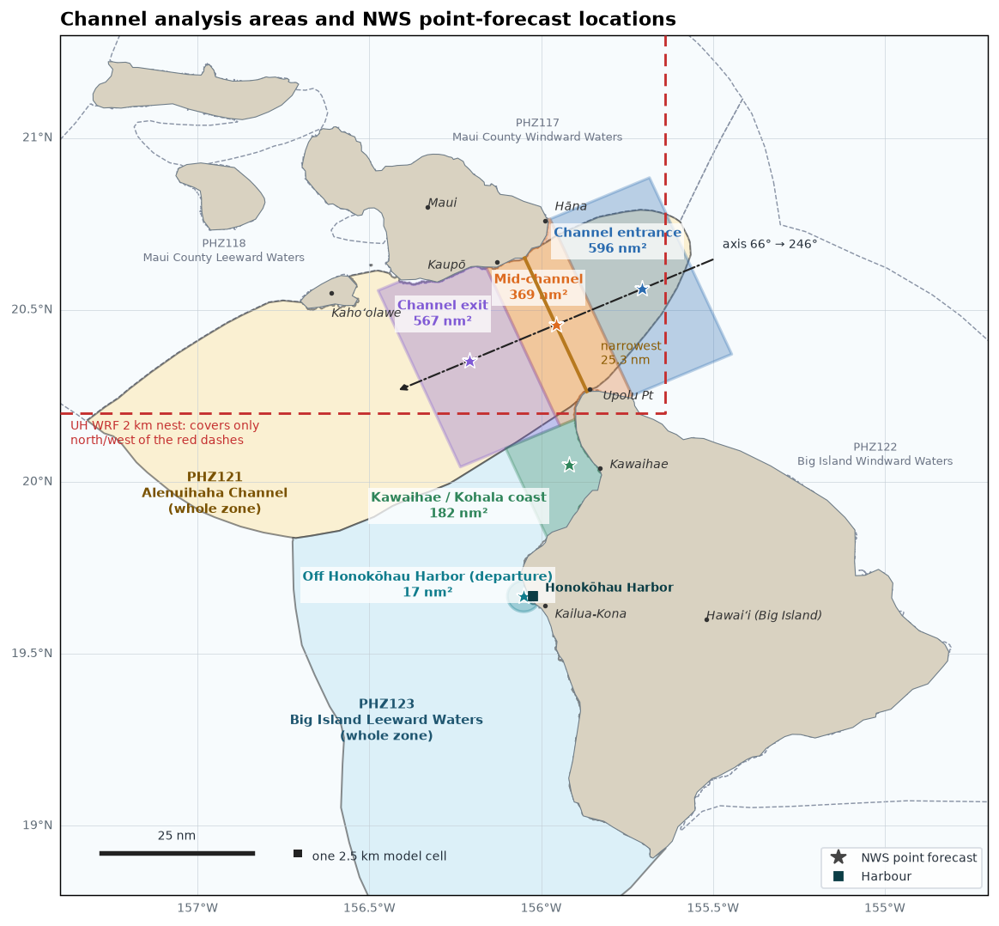
The areas this briefing analyses, used by every map and calculation on the page. The narrowest water between Maui and the Big Island is 25.3 nm, from Maui's Kaupō–Kīpahulu coast to Upolu Point (the orange line); the channel axis is perpendicular to it, 066°/246°. Mid-channel is the throat itself (±6.5 nm), with the entrance and exit 6.5–24 nm either side, a strip along the Kawaihae / Kohala coast, and water within 2.7 nm of a point 1.6 nm off Honokōhau Harbor. Stars mark where each area's NWS point forecast is taken. All areas are water only. The two marine zones they sit in, PHZ121 (Alenuihāhā Channel) and PHZ123 (Big Island leeward waters), are outlined and are also on the chart below. Tap the map for full size.
Model wind maps
Two models side by side for Maui to the Big Island (RRFS and NBM to start; pick any model, gust or REFS product in each menu). Colour is wind speed on each model's own 2.5 km grid, streamlines show direction; move over or tap a map to read the wind there.
Open the full map tool → REFS ensemble maps →
The full tool shows up to four maps on one time slider, plays the hours, and lists every model's run and forecast hours. The REFS maps show where the forecast is uncertain: the ensemble mean, its spread (1 standard deviation) and the chance of 20/30/35/40 kt.
Forecast wind by area
Forecast 10 m wind for each channel area from every model the briefing reads, on one chart. The shaded band is the range across the models and the grey line is their median, so a narrow band means the models agree. The black line is the NWS Honolulu forecast (the grid the zone forecasts are written from). Tap a model to add its own line (dashed = gusts); tap RRFS last runs to see how the last six RRFS runs differ, which shows how much the forecast has been shifting. Drag the slider (or move over the chart) to read every model at one hour. The arrows under the chart show the models' median direction, pointing downwind; red dashed lines mark the small craft advisory (25 kt) and gale (34 kt) thresholds. On the full-zone tabs the NWS zone forecast is drawn too: a dashed box for each period's wind range, a dotted line for its gusts and a strip for any headline; its wording is under the slider (tap NWS zone text to show it on the other tabs, using the zone the area is in).
RRFS extended is the 12Z run, which is also the newest RRFS run, so there is no separate RRFS latest line this time. When a newer short (18 h) run comes out, it is added as RRFS latest.
Model values are averaged over the area's grid points; gust is the 90th percentile across the area (the gustier part of it, not a single grid point). NWS values are at the area's reference point; for a whole zone they are the average of eight points spread through it. Speeds in knots. Build time Sat 26 Sep 06:30 HST.
Models: how often they run and which run is shown
| Source | What it is and how often it runs | Run shown | Age at build | Forecast hours used | Status |
|---|---|---|---|---|---|
| NWS | NWS Honolulu's gridded forecast, the grid the zone and point forecasts are written from; updated whenever forecasters issue (at least twice a day). | updated 2026-09-26T16:02Z Sat 06:02 HST | 0 h | ok | |
| RRFS extended | NOAA's new convection-allowing model, 2.5 km over Hawaii. 00/06/12/18Z runs go out 84 h (the 'extended' runs); the others go out 18 h. Every 3 h in today's pre-operational feed, hourly once operational on 14 Oct 2026. | 12Z Sat 26 Sep Sat 02:00 HST | 4 h | f001–f048 hourly, f051–f075 every 3 h | ok |
| NBM | National Blend of Models: a calibrated blend of many models, 2.5 km, a new run every hour. Continues after the RRFS change. | 15Z Sat 26 Sep Sat 05:00 HST | 2 h | f001–f048 hourly, f051–f072 every 3 h | ok |
| UH WRF | University of Hawaii WRF (run at UH, not NCEP, so not affected by the RRFS change): one run a day, 7 days; PacIOOS posts it about a day late. 2 km Maui-Oahu nest where an area fits in it, 6 km statewide otherwise. No gusts.; 2 km Maui-Oahu nest and 6 km statewide | 06Z Fri 25 Sep Thu 20:00 HST | 34 h | f031–f082 hourly, f085–f106 every 3 h | ok |
| REFS | Ensemble products built from the current and 6 h older RRFS runs plus the RRFS ensemble members; every 6 h (00/06/12/18Z), hourly out to 60 h, 2.5 km. | 12Z Sat 26 Sep Sat 02:00 HST | 4 h | f001–f060 hourly | ok |
RRFS extended is the newest 00/06/12/18Z run (out to 84 h). When a newer short run exists (out to 18 h) it is added as RRFS latest; the median and band use one RRFS, the extended. The pre-operational feed runs every 3 h; the operational RRFS (from 14 Oct 2026) runs hourly, and the page picks that up by itself. HiResW (ARW and FV3) is left out: NCEP retires it for Hawaii on 14 Oct 2026. NBM is a calibrated blend of many models rather than a model of its own. UH WRF has no gusts and publishes one run a day.
REFS ensemble by area
REFS is NOAA's high-resolution ensemble: it combines the latest and 6 h older RRFS runs with the RRFS ensemble members, so it can say how likely a wind is rather than giving one answer. Run 12Z Sat 26 Sep (Sat 02:00 HST), hourly to 60 h. Top: ensemble-mean wind with a band of ± one spread; the spread is the ensemble's standard deviation, so roughly two members in three fall inside the band. A wide band means the members disagree. In the Area average view the dotted lines are the lowest and highest area-average wind among the 11 runs at each time (every 3 h). They cover every run rather than two in three, so they often sit outside the band: the gap between them is the full range of outcomes the runs give. REFS's mean wind speed runs above the individual RRFS winds (about 1 kt mid-channel, up to ~5 kt along the Kohala coast where directions vary), so read it as the upper side of typical rather than the middle. Bottom: the chance of the wind reaching a threshold (tap a threshold to hide its line). Drag the slider to read every value at one hour.
The two buttons ask the same runs two different questions; they are not two separate opinions. REFS is made from the RRFS ensemble members plus the deterministic RRFS, and the 11 runs here are those runs (the five members of the latest run and of the run 6 h before, plus the deterministic RRFS). Area average asks each run for its average wind over this area and counts how many reach 25 kt (small craft advisory), 30 kt or 34 kt (gale), every 3 h to 60 h. Within ~20 nm (REFS) is NOAA's own product: the chance of 20, 30, 35 or 40 kt anywhere within roughly 20 nm of a point, so an area beside the jet can show a high chance while its own average wind stays light. For deciding whether the water you will be on reaches a threshold, the area average is the more direct answer.
ASCAT Coastal Winds (UHR)
This section shows the latest 12 coastal UHR ASCAT wind images. “Coastal UHR” (Ultra High Resolution, 12.5 km) products provide enhanced detail near coastlines, helping reveal localized wind features such as those in the Alenuihāhā Channel. Satellite orbits vary, so not all passes cover the area. Times are shown in UTC (Zulu). Hawaiʻi Standard Time (HST) is 10 hours behind UTC.
Tap the composite to open it full size.
Experimental — Alenuihāhā Channel Wind Analysis
What drives the wind through the Alenuihāhā Channel, one ingredient at a time: the Pacific High that sets up the trades, the pressure gradient across the islands and across the channel itself, the wind feeding in and out, and the trade-wind inversion that caps it. Each part gives the latest numbers first; the method is under How it works.
Pacific High · Isobars over the channel · Station pressure gradient · Buoy pressure gradient · Inflow and outflow · Trade-wind inversion
Synoptic-Scale Forcing: the Pacific High
How it works
The Pacific High's lobes are found automatically in the latest NOAA GFS sea-level pressure (0.25°) over 25–50°N, 125–180°W, at T−24h, now (T0), T+24h and T+48h, and ranked by how hard each pushes toward the channel: the pressure difference between the lobe and the channel over their distance (the gradient), and how well that push lines up with the channel axis (066°/246°). Push along the axis is the geostrophic wind that gradient implies, resolved along the channel. A lobe's size is the area within N hPa of its peak (red outline on the maps).
Where the high is going
Lobe centres at each time over the current isobars; the dashed line follows the top-ranked lobe.
The analysis at each time
Top lobe by time
| Time | Valid (HST) | High centre | Pressure | Distance to channel | Gradient to channel (hPa/1000 nm) | Off channel axis | Push along the axis |
|---|---|---|---|---|---|---|---|
| T−24h | Fri 02:00 | 37.5°N 138.2°W | 1023.3 hPa | 1,378 nm | 9.4 | 19° | 15 kt |
| T0 (now) | Sat 02:00 | 38.2°N 152.0°W | 1025.3 hPa | 1,088 nm | 13.3 | 54° | 13 kt |
| T+24h | Sun 02:00 | 37.2°N 150.2°W | 1025.5 hPa | 1,051 nm | 13.4 | 48° | 15 kt |
| T+48h | Mon 02:00 | 42.5°N 180.0°W | 1026.0 hPa | 1,795 nm | 7.6 | 64° | 6 kt |
Local Isobar Field over the Channel
How it works
A flat pressure surface is fitted to the GFS sea-level pressure over the ocean in a ~180 nm box around the channel (land excluded), for T−24h, now, T+24h and T+48h. Its slope gives the geostrophic wind: speed, direction, the angle to the channel axis (066°/246°) and the part along it. The box spans the whole channel, so there is one value per time; differences between the entrance, mid-channel and exit come from the high-resolution models. Geostrophic wind ignores friction and the terrain's squeeze, so the real channel wind can be well above or below it.
By time
| Time | Valid (HST) | Speed kt | From °T | Off axis | Along axis kt | Fit |
|---|---|---|---|---|---|---|
| T−24h | 2026-09-25 02:00 | 36 | 125° | 59° | 19 | Moderate (R² 0.93, RMS 0.35 hPa) |
| T0 (now) | 2026-09-26 02:00 | 53 | 118° | 52° | 33 | Moderate (R² 0.94, RMS 0.44 hPa) |
| T+24h | 2026-09-27 02:00 | 62 | 132° | 66° | 26 | Moderate (R² 0.93, RMS 0.60 hPa) |
| T+48h | 2026-09-28 02:00 | 37 | 145° | 79° | 7 | Moderate (R² 0.90, RMS 0.43 hPa) |
Pressure Gradient Across the Channel (Stations)
Why this is steeper than the isobars above. The GFS field in Local Isobar Field has pressure falling 3.1 hPa per 100 nm toward 208°; the stations measure 8.5 toward 201°. Same direction, several times steeper, and both are right at their own scale. GFS fits a 180 nm box on a 0.25° grid that cannot resolve the islands; the stations sit on either side of the islands' own pressure pattern, higher on the windward side where the trades pile up against Haleakalā and Kohala and lower in the lee. That local difference is what drives the channel jet, so it is the one to watch here. RRFS, at 2.5 km, puts 10.2 hPa per 100 nm toward 201° at the same stations, close to what they measure: a model that resolves the islands sees the steep local gradient too.
How it works
The push through the channel measured at its own scale. Each hour a flat pressure surface is fitted through the stations around the channel that report sea-level pressure (Kahului airport (PHOG), Hamoa (near Hana) (023HI), Iole (near Upolu Pt) (075HI), Kawaihae harbor (1617433), Kona airport (PHKO), Lanai airport (PHNY)), after removing each station's constant offset over the last five days. Pressure drop toward the exit is how fast pressure falls along the channel axis toward the exit (066°/246°): the forcing that accelerates air through the channel. Channel-wind potential is the speed air would reach running down that drop from the entrance to the exit (~49 nm), √(2Δp/ρ): an upper bound, since friction and mixing hold the real wind below it, but it rises and falls with the forcing. The dashed red line is the same calculation from RRFS's forecast pressure at the same stations, so you can see whether the observed gradient is running ahead of the model or behind it. No geostrophic wind is given: this close to the tropics and the islands the local gradient is far from geostrophic balance.
The fitted isobars now
Magenta: the fitted isobars (hPa, every 1; thin lines at the half), arrow toward low pressure. Dashed: the channel throat. Values: each station's pressure less its 5-day offset; grey = no report this hour.
Regional Pressure Gradient (Buoys)
How it works
Buoy 51000 (23.5°N, 153.8°W) lies northeast of the islands and buoy 51002 (17.1°N, 157.8°W) southwest of them, about 450 nm apart. Their pressure difference is the large-scale push across the Hawaiian chain; their winds are the trade flow going in and coming out. The angle "off the channel axis" is between each buoy's wind and the axis (066°/246°); winds lined up with the channel funnel through it more readily.
| Latest Sat 05:40 | 3 h mean | 24 h mean | 24 h typical (middle half) | 24 h highest | |
|---|---|---|---|---|---|
| Pressure difference 51000 minus 51002 | 7.8 hPa | 7.3 | 7.0 | 6.5–7.4 | 8.0 Fri 20:30 |
| Gradient across the islands | 17.4 hPa/1000 nm | 16.4 | 15.6 | 14.5–16.5 | 17.9 Fri 20:30 |
| Geostrophic wind from that gradient | 30 kt | 28 | 27 | 25–28 | 30 Fri 20:30 |
| Inflow wind, 51000 | 21 kt | 22 | 21 | 19–21 | 25 Sat 02:50 |
| Inflow gust, 51000 | — | 26 | 26 | 25–27 | 31 Sat 00:10 |
| Inflow off channel axis | 24° | 21° | 14° | ||
| Outflow wind, 51002 | 8 kt | 13 | 15 | 14–17 | 25 Fri 07:00 |
| Outflow gust, 51002 | — | 17 | 20 | 17–21 | 33 Fri 07:00 |
| Outflow off channel axis | 86° | 62° | 54° |
The last 24 hours
Inflow and Outflow Wind
Wind and gusts at both buoys over 24 h, and how far each is from the channel axis (0° = straight down the channel; within 15° is well lined up).
Trade-Wind Inversion (Hilo soundings)
How it works
The inversion is a lid on the trade winds: a strong, low one squeezes the flow through the channel and speeds it up; a weak or missing one lets it mix upward. Each twice-daily balloon from Hilo (91285) is searched for a layer below ~4 km that warms and dries upward. Warming Δθ is the jump in potential temperature across it (stability), Drying ΔRH the drop in relative humidity, and the strength index (0–10) combines them, favouring sharp, dry layers of moderate thickness. Supportive lids usually have a base near 1.5–2.5 km, 100–600 m thick, Δθ of 2 K or more and ΔRH of 15–30% or more. Check the Skew-T diagrams for the full profile.
| Launch (HST) | Inversion base–top | Thickness | Warming Δθ | Drying ΔRH | Strength index (0–10) | Wind 925–850 hPa | Risk |
|---|---|---|---|---|---|---|---|
| Thu 14:00 | 2,099–2,260 m | 161 m | 2.9 K | 28% | 3.3 | 7 kt | Low |
| Fri 02:00 | 2,098–2,210 m | 112 m | 2.0 K | 25% | 1.9 | 6 kt | Low |
| Fri 14:00 | none found below 4 km | — | — | — | — | 12 kt | Low |
| Sat 02:00 | none found below 4 km | — | — | — | — | 13 kt | Low |